Langkah demi langkah untuk kasir, dapur, manajer operasional, dan pemilik toko: memasang aplikasi, mencatat pesanan, menjalankan produksi, menerima barang, membaca laporan, sampai merawat data toko.
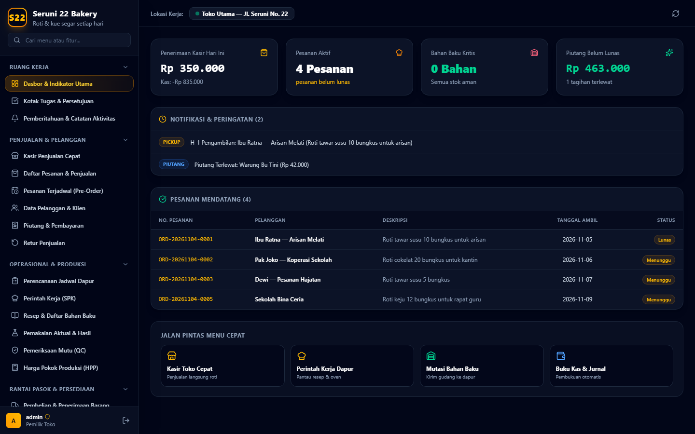
Buku ini disusun mengikuti urutan menu yang tampak di aplikasi. Setiap bab menjelaskan satu menu: apa gunanya, apa yang terlihat di layar, langkah mengoperasikannya, dan menu mana yang harus dibuka sesudahnya.
| Judul dokumen | Buku Manual Pengguna Seruni 22 Bakery |
| Versi aplikasi | 1.2.13 (Windows, aplikasi desktop dengan basis data lokal) |
| Tanggal | 3 November 2026 |
| Pembaca | Pemilik toko, manajer operasional, kepala dapur, staf kasir |
| Lingkup | Dari pemasangan dan login pertama sampai menu terakhir, Pengaturan Toko & Cabang, ditambah alur kerja antarmenu dan perawatan data |
| Sumber gambar | Tangkapan layar aplikasi 1.2.12 yang dijalankan dengan basis data sementara berisi data contoh. Perubahan 1.2.13 menambah tombol dan pesan di dalam layar yang sudah ada, tidak mengubah tata letak yang tampak pada gambar; karena itu kontrol baru 1.2.13 (lihat daftar di bawah) belum terlihat di dalam gambar, tetapi nama dan letaknya ditulis persis seperti di layar |
Bab menu selalu memakai susunan yang sama sehingga mudah dicari saat toko sedang sibuk:
Bagi yang sudah memakai buku edisi 1.2.12, tabel ini menyebut hal yang berbeda pada versi 1.2.13. Tidak ada menu baru dan tidak ada perubahan bentuk basis data, sehingga data toko lama langsung dipakai tanpa penyesuaian.
| Perubahan | Yang terlihat di layar | Dibahas di |
|---|---|---|
| Penolakan server tidak lagi menutup form | Bila SPK, PO, penerimaan barang, atau data pemasok ditolak, pesan galat muncul di dalam form itu sendiri dan isian yang sudah diketik tetap ada. Form baru tertutup setelah server menerima. | Bab 2, 13, 18, 19 |
| Piutang dan utang dimuat bertahap | Di Utang & Piutang Usaha muncul tombol Muat n pesanan lagi, Muat n dokumen lagi, dan penanda · hanya baris yang termuat selama sebagian daftar belum ditarik dari server. | Bab 27 |
| Biaya tenaga kerja dan overhead masuk ke nilai persediaan | Penyelesaian SPK memindahkan tenaga kerja dan overhead ke akun 1-006 bersama bahan; selisih pembulatan kecil dibukukan ke 5-006, bukan hilang dan bukan membebani gaji/operasional. | Bab 17, 25 |
| Cadangan lama dipilih yang sudah terverifikasi | Pembersihan cadangan otomatis menyimpan lebih dulu salinan yang lolos verifikasi, jadi cadangan rusak yang kebetulan terbaru tidak menghabiskan jatah. | Bab 38 |
| Kunci pengiriman ulang punya masa berlaku | Kunci yang tertinggal karena aplikasi mati di tengah jalan kedaluwarsa setelah 30 menit, sehingga tombol simpan tidak lagi selalu ditolak sebagai duplikat. | Bab 2, Lampiran D |
| Status perangkat kasir dipakai ulang 15 detik | Menjelang pembayaran, printer jaringan yang lambat tidak diperiksa ulang setiap kali layar dibuka; menyimpan pengaturan perangkat langsung membuang status lama. | Bab 6, 32 |
| Opname memakai satu kunci per baris bahan | Dua kali menekan Setel pada baris bahan yang berbeda berurutan kini sama-sama tersimpan; sebelumnya yang kedua bisa ditolak sebagai pengulangan. | Bab 23 |
| Aplikasi dikunci hanya untuk komputer ini | Permintaan untuk membuka alamat selain 127.0.0.1/localhost ditolak pada saat start, sebelum basis data dibuat. | Bab 0, 39 |
Seluruh nama pelanggan, nomor pesanan, dan nominal di dalam gambar adalah data contoh pada basis data sementara. Data toko Anda yang sebenarnya tidak dipakai untuk membuat buku ini dan tidak berubah karenanya.
Gunakan kotak Cari menu atau fitur... di sisi kiri untuk melompat ke menu tanpa menggulir daftar. Tombol Perbarui Data di bilah atas memuat ulang angka layar yang sedang dibuka.
Aplikasi ini menyimpan data usaha di PC tempat ia dipasang. Jangan menghapus, memindahkan, atau mengganti nama berkas basis data, dan jangan mencopot aplikasi dengan cara menghapus foldernya. Cara mencadangkan dan memulihkan data dijelaskan di Bab 38.
Nomor halaman pada daftar ini mengikuti nomor halaman PDF. Bila membaca di komputer, gunakan pencarian teks PDF dan ketik nama menu persis seperti tertulis di aplikasi, misalnya Pengaturan Toko & Cabang.
Bagian I–II membahas pintu masuk dan ruang kerja. Bagian III–VII mengikuti urutan kelompok menu di sisi kiri aplikasi. Bagian VIII merangkum alur kerja lintas menu, perawatan data, dan batasan versi ini.
Bab ini memandu dari berkas pemasangan sampai toko siap menerima transaksi pertama: memasang aplikasi, membukanya untuk pertama kali, masuk dengan akun bawaan, mengganti kata sandi, dan mengisi pengaturan dasar.
Siapkan PC kasir dan berkas pemasangan versi 1.2.13. Aplikasi berjalan di PC itu sendiri dan menyimpan datanya secara lokal; pemakaian harian tidak memerlukan sambungan internet.
| Hal | Yang perlu diketahui |
|---|---|
| Komputer | Windows 64-bit. Paket sudah membawa runtime .NET 8, jadi tidak perlu memasang .NET terpisah. Pengujian versi ini memakai Windows 11; Windows 10 belum diuji (Bab 39). |
| Kanal pemasangan | Pilih satu: EXE (per pengguna, tanpa hak administrator) atau MSI (per komputer, memerlukan administrator). Keduanya memakai folder data dan port yang sama sehingga tidak boleh terpasang bersamaan. |
| Berkas pemasangan | Seruni22Bakery_Setup_v1.2.13.exe untuk kanal EXE, atau Seruni22Bakery_v1.2.13_x64.msi untuk kanal MSI. Paket belum ditandatangani Authenticode (Bab 39). |
| Data lama | Bila PC sudah pernah memakai versi sebelumnya, buat cadangan lebih dahulu (Bab 37) dan pasang versi baru dari kanal yang sama. |
Jangan memasang EXE dan MSI pada komputer yang sama. Installer akan menolak, tetapi bila keduanya sempat terpasang, keduanya berebut port 5000 dan folder data yang sama. Copot kanal lama terlebih dahulu sebelum berpindah kanal.
Seruni22Bakery_Setup_v1.2.13.exe.Untuk kanal MSI, langkahnya sama tetapi pemasangan dilakukan oleh administrator dan program ditempatkan di folder Program Files. Jangan menjalankan kedua installer sekaligus.
Installer tidak memuat basis data maupun kunci. Data toko dibuat saat aplikasi pertama kali dijalankan dan disimpan di luar folder program, sehingga pemasangan pembaruan maupun pencopotan aplikasi tidak menghapus data.
127.0.0.1:5000.Menutup jendela peramban tidak menghapus data. Untuk melanjutkan pekerjaan, buka pintasan Seruni 22 Bakery lagi; aplikasi akan menyala dan menampilkan layar masuk.
Server lokal sengaja hanya membuka alamat di PC itu sendiri
(http://127.0.0.1:5000 atau http://localhost:5000). Bila
aplikasi diminta listen pada alamat lain — misalnya lewat parameter
--urls atau konfigurasi Kestrel:Endpoints — start dihentikan
dengan pesan "Alamat dengar '…' ditolak: aplikasi ini hanya untuk PC ini."
Penolakan terjadi sebelum kunci dan basis data dibuat, sehingga salah ketik konfigurasi
tidak meninggalkan berkas dan tidak sempat membuka port ke jaringan. Memakai aplikasi dari
PC lain di jaringan bukan cara kerja produk ini; membukanya secara paksa
(SERUNI_ALLOW_LAN=1) hanya untuk keperluan teknis tertentu dan menuntut
peninjauan aturan firewall secara manual.
Setiap instalasi baru memiliki satu akun Pemilik Toko. Akun ini dipakai hanya untuk masuk pertama kali dan wajib diganti kata sandinya.
| Isian di layar masuk | Nilai awal |
|---|---|
| Nama Pengguna / ID Pegawai | admin |
| Kata Sandi (PIN) | admin123 |
| Peran | Pemilik Toko |
admin123 hanya berlaku sampai kata sandi diganti dan diketahui siapa pun
yang membaca buku ini. Jangan membiarkan akun ini memakai kata sandi bawaan, jangan
menuliskan kata sandi di meja kasir, dan jangan memakai satu akun untuk beberapa orang.
admin123.admin123 tidak berlaku lagi.Simpan kata sandi Pemilik Toko di tempat aman. Aplikasi tidak menampilkan kembali kata sandi yang sudah disimpan. Untuk pegawai lain, Pemilik Toko dapat memberikan kata sandi sementara lewat menu Hak Akses & Pegawai (Bab 31).
Instalasi baru dimulai dengan data kosong. Isi pengaturan berikut secara berurutan agar transaksi pertama langsung tercatat pada toko, gudang, dan produk yang benar.
| Menu | Yang diisi | Bab |
|---|---|---|
| Pengaturan Toko & Cabang | Nama toko, slogan, alamat, telepon, zona waktu, logo, dan teks struk | 33 |
| Hak Akses & Pegawai | Akun kasir, dapur, dan manajer beserta perannya | 31 |
| Perangkat Kasir | Printer dan pemindai, bila perangkat sudah tersedia | 32 |
| Gudang & Lokasi Rak | Gudang utama, dapur, dan etalase | 20 |
| Resep & Daftar Bahan Baku — tab Bahan Baku | Semua bahan baku beserta Satuan dan Harga per Satuan (Rp); tab Produk & Resep mengisi produk jadi, harga jual, dan komposisi bahan tiap produk | 14 |
| Pemasok & Rekanan — tab Pemasok | Pemasok bahan yang biasa dipakai toko | 19 |
| Katalog Bahan & Produk Jadi | Tidak perlu diisi — layar ini menampilkan ulang bahan dan produk dari Bab 14 untuk diperiksa harga dan stoknya | 22 |
Setelah fondasi terisi, catat stok awal lewat Stok Awal pada formulir Bahan Baku (Bab 14.3) atau lewat Pemeriksaan Fisik (Stok Opname) (Bab 23) bila diperlukan — keduanya sama-sama membukukan nilai persediaan. Untuk stok fisik yang sudah ada di lebih dari satu lokasi, opname lebih tepat karena dapat diisi per lokasi. Lalu mulai mencatat penjualan di Kasir Penjualan Cepat (Bab 6).
Urutan yang benar adalah isi bahan dulu, lalu tambah pemasok, baru buat PO. PO bukan tempat memulai — PO hanya dokumen yang menyebut bahan dan pemasok yang sudah ada. Dua alasan teknis membuat urutan ini tidak bisa dibalik:
Jadi, pengisian pertama kali berjalan seperti ini:
Bahan yang sudah tersimpan juga muncul di Katalog Bahan & Produk Jadi (Bab 22). Layar itu hanya untuk memeriksa, tidak untuk mengisi.
Bila toko sudah punya stok fisik dan belum mau membeli apa pun, langkah 3 dan 4 boleh dilewati: cukup isi master bahan (langkah 1) lalu setel stok awalnya — lewat Stok Awal di formulir bahan (selisihnya kemudian ditambal lewat Pemeriksaan Fisik (Stok Opname) bila stok itu tersebar di lebih dari satu lokasi). Pemasok dan PO tetap diperlukan begitu bahan mulai dibeli.
Bila urutannya dibalik, aplikasi menolak dengan alasan yang tampil di dalam formulir. Contoh pesan yang benar-benar muncul:
Daftar Pemasok yang masih kosong akan membuat dropdown Pemasok * hanya berisi — Pilih Pemasok —. Itu tanda Anda berada di langkah ke-3 terlalu awal — kembali ke langkah 2.
Urutan penyiapan pertama kali:
Bagian ini merangkum seluruh contoh di buku ke dalam satu urutan kerja. Angka yang dipakai adalah data contoh toko yang benar-benar diketik ke aplikasi versi 1.2.13 dan direkam sebagai gambar di tiap bab, jadi nominal, nomor dokumen, dan tanggalnya nyambung dari langkah 1 sampai 16. Nama toko, nama orang, dan produknya contoh belaka — yang tetap adalah urutan dan label di layar.
Setiap baris menunjuk sub-bab tempat angkanya dibahas bersama gambarnya. Bila sebuah langkah gagal dengan pesan penolakan, kembali ke langkah sebelumnya — aplikasi memang tidak mengizinkan langkah berikutnya sebelum datanya ada.
| # | Menu | Tindakan | Contoh isi (label layar persis) | Bab |
|---|---|---|---|---|
| 1 | Pengaturan Toko & Cabang | Isi identitas toko | Nama toko Seruni 22 Bakery, slogan "Roti & kue segar setiap hari", cabang Toko Utama — Jl. Seruni No. 22, zona waktu Asia/Jakarta | 33 |
| 2 | Hak Akses & Pegawai | Tambah Pegawai | Nama pengguna devi.kasir, Peran Staf Toko / Kasir (Pegawai) | 31 |
| 3 | Resep & Daftar Bahan Baku — tab Bahan Baku | Tambah Bahan | Mis. Bread Crumb Tepung Roti, Satuan kg, Harga per Satuan (Rp) 4.500, Min. Stok 2 | 14 |
| 4 | Resep & Daftar Bahan Baku — tab Produk & Resep | Tambah Produk | Mis. Roti Gandum Kernel, Kategori Roti, Harga Jual (Rp) 15.000, satu baris resep Tepung Terigu Cakra (kg) 0,25 | 14 |
| 5 | Pemasok & Rekanan | Tambah Pemasok | Mis. Toko Bahan Kue Makmur, Nama Kontak Bu Ratna, Telepon 0812-3456-7890 | 19 |
| 6 | Pembelian & Penerimaan Barang | Buat PO Baru | Pemasok * PT Dairy Prima, baris Mentega Tawar Qty 20 Satuan kg Harga (Rp) 30.000 | 18 |
| 7 | Pembelian & Penerimaan Barang | Terima pada baris PO | Cokelat Compound: Terima Sekarang 20, Nomor Batch (opsional) CHK-2603, Kedaluwarsa 2027-02-02 | 18 |
| 8 | Pemeriksaan Fisik (Stok Opname) | Isi Jumlah Fisik lalu Setel | Cokelat Compound: Saldo Sistem 9,75 → Jumlah Fisik 9,5, Selisih −0,25 | 23 |
| 9 | Mutasi Gudang ke Dapur | Mutasi Bahan | Tepung Terigu Cakra 15 kg dari WH-MAIN · Gudang Utama Bahan Baku ke KIT-DAPUR · Dapur Produksi | 21 |
| 10 | Perintah Kerja (SPK) | Buat SPK Produksi Baru | Produk * Kroisan Mentega, Target Jumlah (buah) * 40, Biaya Tenaga Kerja (Rp) 300.000, Biaya Overhead (Rp) 150.000 | 13 |
| 11 | Perintah Kerja (SPK) | Selesaikan lalu isi hasil | SPK-20261104-0003: Roti Bagus (Lolos Uji) 38, Roti Gagal / Bantat 2 dengan Gosong / oven tidak stabil | 13 |
| 12 | Pemeriksaan Mutu (QC) | Periksa SPK | SPK selesai SPK-20261104-0001 · Roti Tawar Susu · 48 unit baik; Sampel 10, Lulus 9, Gagal 1 | 16 |
| 13 | Kasir Penjualan Cepat | Tambah Transaksi / Pesanan | Bu Rani — Ulang tahun anak, Qty 10, Total (Rp) 250.000, DP / Uang Muka (Rp) 100.000 | 6 |
| 14 | Piutang & Pembayaran | Bayar lalu Catat Pembayaran | ORD-20261104-0005 Sekolah Bina Ceria: Sisa Tagihan Rp 156.000, Metode Pembayaran Transfer Bank | 10 |
| 15 | Retur Penjualan | Catat Retur | RTR-20261104-0001: Jumlah unit 2, uang kembali Rp 50.000, Metode pengembalian dana Tunai | 11 |
| 16 | Kas Toko & Rekening Bank | Catat Pengeluaran Kas | Kategori biaya Bahan Baku & Kebutuhan Dapur, Nominal (Rp) 150.000, beli gas elpiji | 26 |
Langkah 3–4 adalah fondasi yang paling sering dilewati. Tanpa bahan dan resep, SPK tidak punya kebutuhan bahan, PO tidak punya baris, dan HPP (Bab 17) hanya menampilkan nol. Setelah langkah 4 selesai, semua layar lain tinggal mengikuti.
%LOCALAPPDATA%\Seruni22Bakery\backups\.%LOCALAPPDATA%\Seruni22Bakery.Aplikasi Seruni 22 Bakery mencatat penjualan, produksi, persediaan, dan keuangan toko roti dalam satu basis data lokal. Bab ini menunjukkan letak setiap pekerjaan di menu agar Anda membuka layar yang benar sejak awal.
Pekerjaan harian toko roti terbagi menjadi lima wilayah yang saling terhubung. Setiap wilayah punya kelompok menu sendiri, tetapi semuanya membaca dan menulis ke basis data yang sama.
| Wilayah kerja | Yang dicatat |
|---|---|
| Penjualan | Pesanan pelanggan, uang muka, pelunasan, piutang, retur, cetak struk |
| Produksi | Perintah kerja dapur (SPK), resep, pemakaian bahan aktual, pemeriksaan mutu, harga pokok produksi |
| Persediaan | Pembelian ke pemasok, penerimaan barang, nomor batch, mutasi gudang ke dapur, stok opname |
| Keuangan | Jurnal otomatis, buku kas, utang dan piutang usaha, laba rugi, neraca saldo |
| Pengawasan | Dasbor, kotak tugas, notifikasi internal, jejak audit, hak akses, pengaturan toko |
Karena semua bagian memakai satu basis data, satu tindakan dapat mengubah beberapa layar sekaligus. Contoh: pesanan yang menjadi lunas mengurangi stok produk jadi di etalase; SPK yang diselesaikan menambah stok etalase dan menulis jurnal tenaga kerja; penerimaan barang menambah stok gudang dan utang pemasok. Bab-bab berikut selalu menyebut akibat seperti ini.
Menu di sisi kiri disusun dalam enam kelompok. Urutannya mengikuti arus pekerjaan toko: dari pantauan harian, penjualan, produksi, persediaan, keuangan, sampai pengaturan.
| Kelompok | Isi dan kegunaan |
|---|---|
| RUANG KERJA | Dasbor & Indikator Utama, Kotak Tugas & Persetujuan, Pemberitahuan & Catatan Aktivitas. Tempat memulai hari dan melihat apa yang menunggu tindakan. |
| PENJUALAN & PELANGGAN | Kasir Penjualan Cepat, Daftar Pesanan & Penjualan, Pesanan Terjadwal (Pre-Order), Data Pelanggan & Klien, Piutang & Pembayaran, Retur Penjualan. |
| OPERASIONAL & PRODUKSI | Perencanaan Jadwal Dapur, Perintah Kerja (SPK), Resep & Daftar Bahan Baku, Pemakaian Aktual & Hasil, Pemeriksaan Mutu (QC), Harga Pokok Produksi (HPP). |
| RANTAI PASOK & PERSEDIAAN | Pembelian & Penerimaan Barang, Pemasok & Rekanan, Gudang & Lokasi Rak, Mutasi Gudang ke Dapur, Katalog Bahan & Produk Jadi, Pemeriksaan Fisik (Stok Opname), Nomor Batch & Kedaluwarsa. |
| KEUANGAN & AKUNTANSI | Buku Besar & Jurnal Umum, Kas Toko & Rekening Bank, Utang & Piutang Usaha, Laporan Keuangan & Laba Rugi. |
| ANALISIS & PENGATURAN | Analisis & Tren Penjualan, Jejak Audit & Riwayat Sistem, Hak Akses & Pegawai, Perangkat Kasir, Pengaturan Toko & Cabang. |
Seluruh menu kelompok dapat dilipat atau dibuka dengan menekan nama kelompoknya.
Setiap akun memiliki satu peran. Peran menentukan menu apa yang tampil di sisi kiri dan tindakan apa yang boleh dilakukan. Bila sebuah menu tidak terlihat pada akun Anda, artinya peran tersebut memang tidak berwenang membukanya; server juga menolak permintaan yang melanggar aturan ini.
| Peran (label di layar) | Kewenangan utama |
|---|---|
| Pemilik Toko Owner |
Semua menu dan tindakan, termasuk Pengaturan Toko & Cabang, Hak Akses & Pegawai, Jejak Audit, dan Perangkat Kasir. |
| Manajer Operasional Admin |
Penjualan, pembatalan, retur, ekspor, produksi, persediaan, pembelian, dan keuangan. Tidak dapat membuka empat menu pengaturan sistem milik Pemilik Toko. |
| Kepala Dapur Dapur |
Produksi, resep, persediaan, stok opname, batch, dan penerimaan barang. Tidak membuka keuangan, analisis, maupun pengaturan sistem. |
| Staf Toko / Kasir Pegawai |
Mencatat pesanan dan pembayaran, melihat pelanggan, piutang, pre-order, serta kotak tugas. Tidak dapat membatalkan pesanan, mencatat retur, atau membuka persediaan dan keuangan. |
Jangan berbagi akun antarpegawai. Jejak Audit mencatat nama akun pada setiap tindakan, sehingga pekerjaan yang dilakukan dengan akun orang lain akan tercatat atas nama pemilik akun tersebut. Buat akun terpisah lewat menu Hak Akses & Pegawai (Bab 31).
| Istilah | Arti praktis |
|---|---|
| Pesanan / nota | Satu transaksi pelanggan dengan nomor unik, misalnya ORD-20261104-0001. |
| DP / Uang Muka | Uang yang dibayar di muka. Pesanan dianggap lunas bila DP sudah menutup seluruh total. |
| Etalase | Lokasi penyimpanan produk jadi yang siap dijual di toko. |
| SPK | Surat Perintah Kerja: perintah produksi untuk sejumlah target produk di dapur. |
| Resep / BOM | Daftar bahan dan jumlahnya untuk membuat satu produk. Menentukan kebutuhan bahan saat produksi. |
| QC | Pemeriksaan mutu sampel produk setelah SPK selesai. |
| HPP | Harga Pokok Produksi. HPP standar dihitung dari resep; HPP aktual dari pemakaian bahan, tenaga kerja, dan overhead SPK yang selesai. |
| Batch / lot | Sekumpulan bahan dari satu penerimaan dengan nomor dan tanggal kedaluwarsa sendiri. |
| Mutasi | Perpindahan stok antarlokasi, misalnya Gudang Utama ke Dapur Produksi. |
| Stok opname | Penghitungan fisik barang untuk menyetel saldo sistem. |
| Jurnal | Catatan akuntansi otomatis dari transaksi. Layar keuangan membaca jurnal, bukan angka ketikan terpisah. |
| Hari bisnis | Tanggal yang dipakai aplikasi untuk menghitung “hari ini”, mengikuti zona waktu toko di Pengaturan. |
Baru pertama kali memakai aplikasi? Dua langkah pertama harus mengisi data pokok dulu — bahan di tab Bahan Baku pada menu Resep & Daftar Bahan Baku, lalu pemasok di Pemasok & Rekanan (Bab 0.6.1) — sebelum menyentuh Buat PO Baru atau kasir. Sesudah fondasi terisi, urutan pekerjaan hariannya:
Bab ini memandu Anda membuka aplikasi, melewati layar masuk, mengganti kata sandi sementara, dan memahami bagian-bagian jendela kerja sebelum mulai mencatat transaksi.
Bila aplikasi belum terpasang di PC ini, ikuti Bab 0 lebih dahulu. Bab ini dimulai dari aplikasi yang sudah terpasang dan siap dibuka.
Aplikasi berjalan di PC ini dan menyimpan datanya secara lokal. Pekerjaan harian tidak bergantung pada sambungan internet, dan tidak ada pesan yang dikirim ke layanan luar.
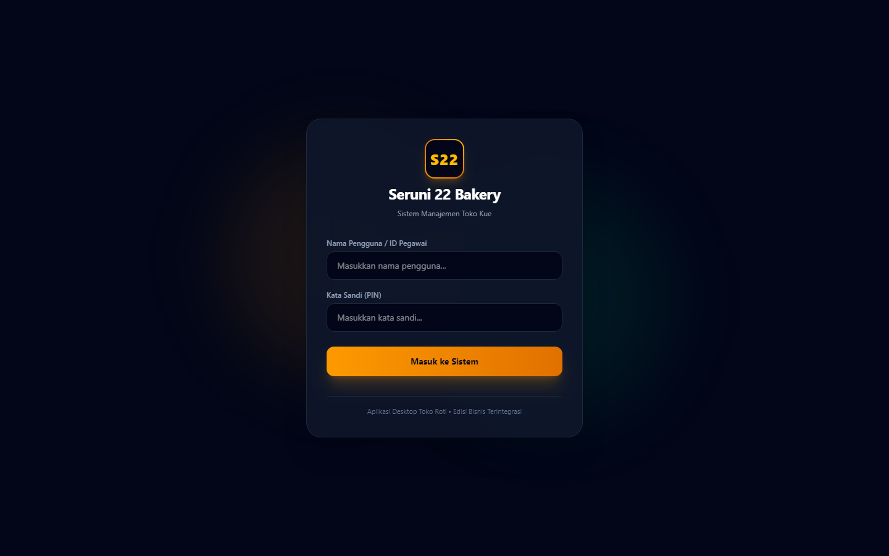
Bila nama pengguna atau kata sandi tidak cocok, layar menampilkan pesan Nama pengguna atau kata sandi tidak cocok. Periksa ejaan dan pastikan tombol Caps Lock tidak aktif. Bila akun dinonaktifkan, hubungi Pemilik Toko.
Jangan menuliskan kata sandi di kertas yang ditempel di meja kasir dan jangan memakai satu akun untuk beberapa orang. Pemilik Toko dapat membuat akun terpisah dan memberikan kata sandi sementara lewat menu Hak Akses & Pegawai.
Akun bawaan admin dan akun baru yang dibuat dari layar
Hak Akses & Pegawai selalu berangkat dengan kata sandi sementara. Sebelum dapat
memakai aplikasi, pemilik akun wajib menggantinya sendiri.
Layar ini muncul otomatis setelah masuk dan tidak dapat dilewati.
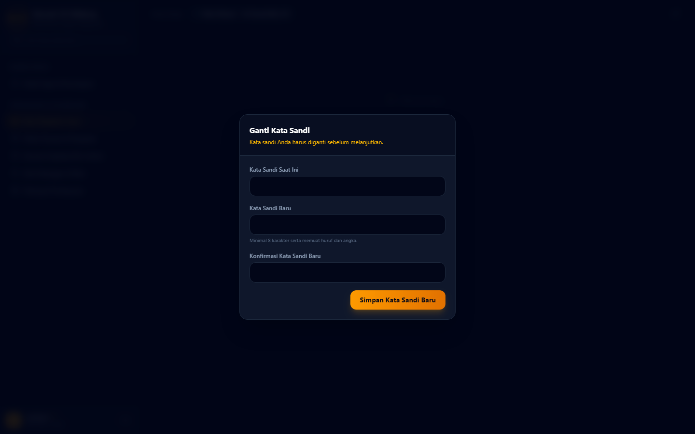
Pilih kata sandi yang mudah Anda ingat tetapi sulit ditebak orang lain, misalnya gabungan dua kata ditambah angka. Setelah tersimpan, gunakan kata sandi baru pada login berikutnya.
Setelah masuk, jendela kerja terdiri dari tiga bagian tetap:
Gunakan kotak pencarian menu untuk melompat ke layar tertentu, misalnya ketik piutang lalu pilih Piutang & Pembayaran. Bila daftar panjang, gunakan tombol Muat lagi di bawah tabel untuk menampilkan baris berikutnya.
Menu yang tidak terlihat bukan kerusakan. Daftar menu disaring sesuai peran akun. Contohnya, Staf Toko / Kasir tidak melihat kelompok Keuangan, dan Manajer Operasional tidak melihat menu pengaturan sistem milik Pemilik Toko.
Selalu keluar setelah selesai memakai PC bersama, terutama sebelum serah terima shift. Tindakan yang sudah berhasil disimpan tidak hilang ketika Anda keluar.
Server memeriksa setiap penyimpanan: nominal, stok, saldo akun, hak akses, dan kemungkinan pengiriman ganda. Bila menolak, aplikasi menampilkan alasannya. Perlakuannya berbeda menurut jenis tindakan:
Baca pesan penolakan sampai selesai — di dalamnya biasanya disebut bahan, pesanan, atau akun yang bermasalah. Daftar pesan yang sering muncul beserta tindakannya ada di Lampiran D.
Setelah masuk, aplikasi membuka ruang kerja. Mulailah dari dasbor untuk melihat keadaan hari ini.
Dasbor adalah layar pertama setelah masuk. Isinya ringkasan keadaan toko hari ini: uang masuk, pesanan yang belum selesai, bahan yang menipis, piutang, peringatan, dan pesanan yang akan diambil pelanggan.
| Kartu | Yang perlu dibaca |
|---|---|
| Penerimaan Kasir Hari Ini | Jumlah uang yang diterima kasir pada hari bisnis berjalan. Baris kecil di bawahnya menunjukkan keterangan kas yang menyertainya. |
| Pesanan Aktif | Banyaknya pesanan yang belum lunas. Bila tidak ada, tertulis Tidak ada pesanan aktif. |
| Bahan Baku Kritis | Bahan yang stoknya berada di bawah batas minimum. Bila semua aman, tertulis Semua stok aman. |
| Piutang Belum Lunas | Sisa tagihan pelanggan, dengan keterangan jumlah tagihan yang sudah melewati jadwal. |
Di bawah indikator terdapat bagian Notifikasi & Peringatan yang menampilkan hal-hal yang perlu segera diperiksa, misalnya stok menipis, lot mendekati kedaluwarsa, pesanan jatuh tempo, atau dokumen yang belum ditindaklanjuti. Di sebelahnya, tabel Pesanan Mendatang memuat kolom No. Pesanan, Pelanggan, Deskripsi, Tanggal Ambil, dan Status.
Di bagian bawah dasbor terdapat empat kartu Jalan Pintas Menu Cepat. Kartu-kartu ini membuka layar yang paling sering dipakai:
| Kartu | Membuka |
|---|---|
| Kasir Toko Cepat Penjualan langsung roti | Menu Kasir Penjualan Cepat (Bab 6) |
| Perintah Kerja Dapur Pantau resep & oven | Menu Perintah Kerja (SPK) (Bab 13) |
| Mutasi Bahan Baku Kirim gudang ke dapur | Menu Mutasi Gudang ke Dapur (Bab 21) |
| Buku Kas & Jurnal Pembukuan otomatis | Menu Buku Besar & Jurnal Umum (Bab 25) |
Angka pada dasbor berasal dari transaksi yang sudah tercatat, bukan target harian. Dasbor yang masih kosong pada toko baru berarti belum ada transaksi, bukan kerusakan. Angka akan terisi setelah kasir mencatat pesanan dan pembayaran.
Biasakan membuka dasbor pada awal shift, setelah jam makan siang, dan sebelum tutup. Tiga kali pemeriksaan singkat ini membantu menangkap piutang, stok kritis, dan pesanan yang belum diambil sebelum menjadi masalah.
Kotak tugas bukan daftar pekerjaan yang diketik manual. Isinya disusun aplikasi dari kondisi stok, pesanan, pembelian, dan produksi saat ini, sehingga selalu menunjukkan pekerjaan yang benar-benar menunggu tindakan.
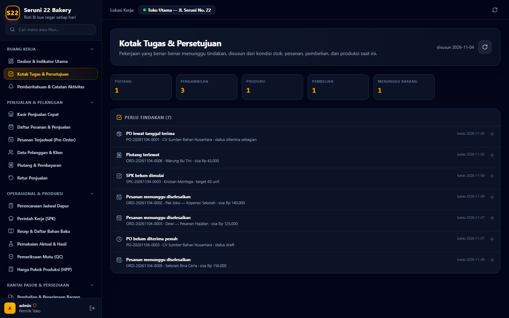
Kepala layar menampilkan Perlu tindakan (n) beserta keterangan disusun {tanggal}. Tugas dapat berasal dari beberapa kondisi, antara lain:
Tugas tidak dihapus dengan tombol tersendiri. Tugas hilang dari daftar ketika kondisi penyebabnya sudah diselesaikan di menu asal. Bila daftar kosong, layar menampilkan pesan Tidak ada pekerjaan yang menunggu sekarang. beserta penjelasan bahwa daftar akan terisi sendiri.
Kotak tugas dapat dibuka oleh semua peran, termasuk Staf Toko / Kasir. Namun tindakan penyelesaiannya tetap mengikuti hak akses. Bila Anda tidak berwenang, catat temuannya dan teruskan kepada Kepala Dapur, Manajer Operasional, atau Pemilik Toko.
Jadikan kotak tugas sebagai agenda serah terima shift. Bila daftar sudah kosong dan dasbor menunjukkan angka wajar, keadaan toko siap diserahkan kepada shift berikutnya.
Layar ini menyimpan catatan transaksi, tugas, stok, produksi, dan ringkasan harian di basis data lokal. Semua pesan bersifat internal; tidak ada pesan yang dikirim ke layanan luar.
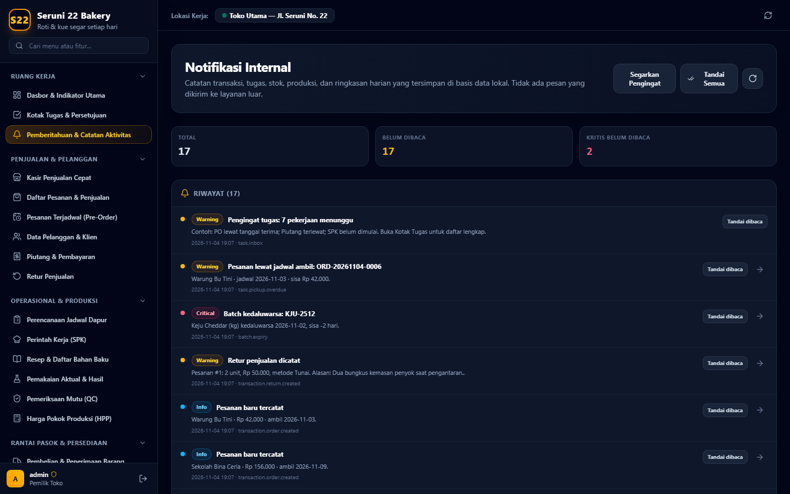
Tiga kotak di bagian atas menunjukkan keadaan kotak masuk:
| Kotak | Arti |
|---|---|
| Total | Seluruh notifikasi yang tersimpan. |
| Belum Dibaca | Notifikasi yang belum dibuka atau ditandai. |
| Kritis Belum Dibaca | Notifikasi penting yang belum dibaca; periksa lebih dahulu. |
Bila belum ada notifikasi, layar menampilkan pesan bahwa catatan akan muncul sendiri setelah transaksi tercatat atau setelah pengingat disusun.
Notifikasi hanya alat pengingat. Sumber kebenaran tetap layar menu asalnya. Misalnya, notifikasi stok menipis tidak mengubah stok; periksa Gudang & Lokasi Rak atau Nomor Batch & Kedaluwarsa untuk melihat angka sebenarnya.
Tekan Tandai Semua pada akhir shift setelah Anda mencatat hal yang perlu dikerjakan shift berikutnya. Dengan begitu, daftar keesokan pagi hanya berisi peringatan baru.
Menu ini dipakai untuk mencatat penjualan langsung, pesanan dengan uang muka, dan pesanan pelanggan di meja kasir. Satu formulir menghasilkan satu nota dengan nomor pesanan resmi.
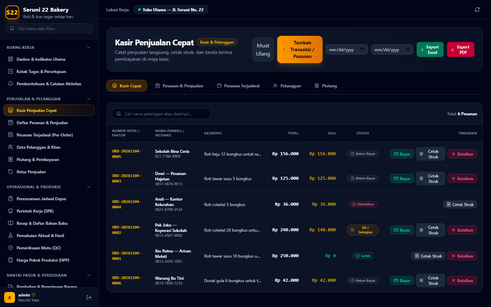
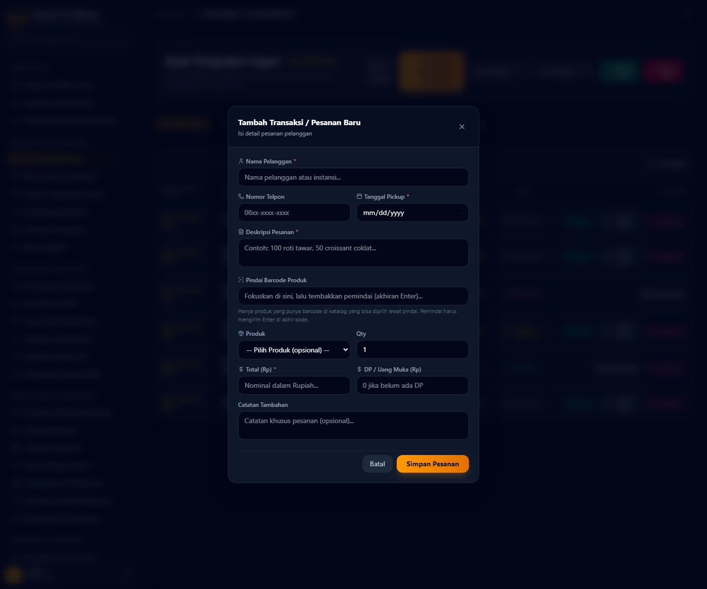
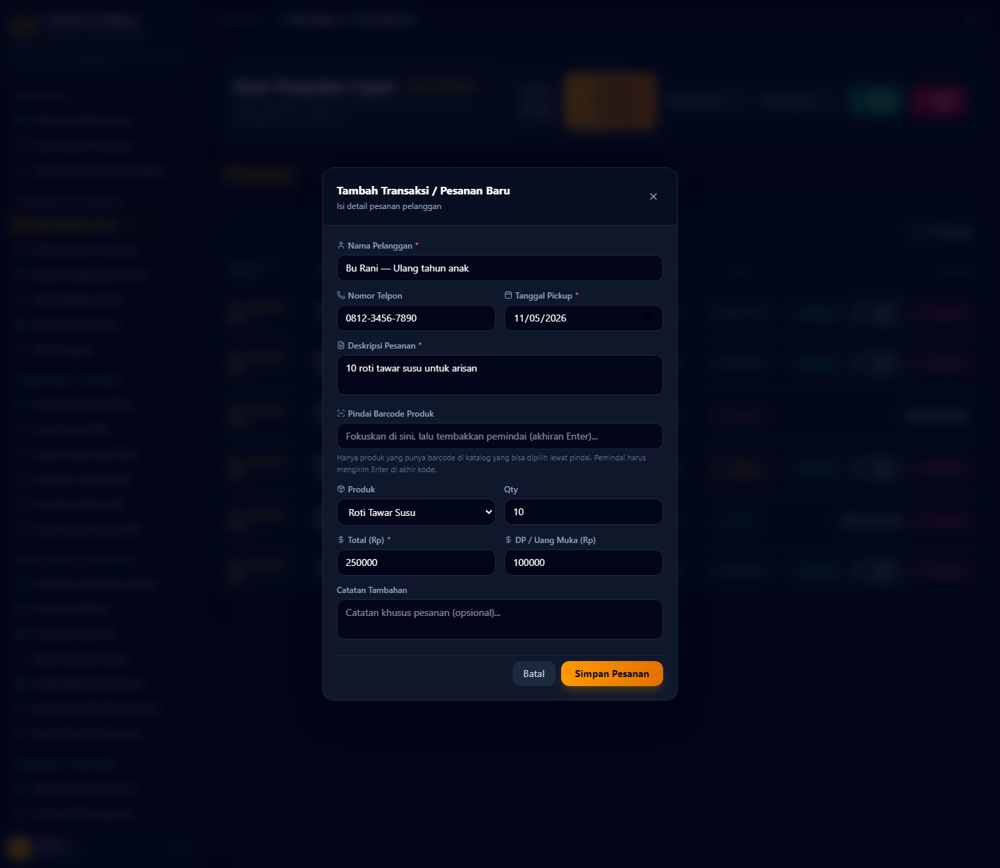
| Label di layar | Isi contoh |
|---|---|
| Nama Pelanggan * | Bu Rani — Ulang tahun anak |
| Nomor Telpon | 0812-3456-7890 |
| Tanggal Pickup * | 2026-11-05 (besok) |
| Deskripsi Pesanan * | 10 roti tawar susu untuk arisan |
| Produk | Roti Tawar Susu |
| Qty | 10 |
| Total (Rp) * | 250000 — dihitung aplikasi dari harga katalog Rp 25.000 × 10 |
| DP / Uang Muka (Rp) | 100000 (sebagian; sisanya Rp 150.000 menjadi piutang) |
Nominal di kolom rupiah diketik penuh tanpa titik ribuan: 250000 berarti Rp 250.000. Data yang tersimpan di layar memakai pemisah ribuan, jadi 250000 tampil sebagai Rp 250.000.
Pesanan contoh yang benar-benar tersimpan di data contoh memakai DP penuh sehingga langsung Lunas: ORD-20261104-0001 atas nama Ibu Ratna — Arisan Melati, 10 unit Roti Tawar Susu, Total (Rp) 250.000 dan DP / Uang Muka (Rp) 250.000, jadwal ambil 5 November 2026. Karena seluruh total dibayar di muka, stok Roti Tawar Susu di Etalase Toko & Kasir langsung berkurang 10 unit dan pesanan ini muncul di Perencanaan Jadwal Dapur sebagai "H-1 Pengambilan" pada Dasbor. Pesanan dengan DP sebagian, misalnya ORD-20261104-0002 (Pak Joko, total Rp 240.000, DP Rp 100.000), tetap Belum Bayar dan sisanya Rp 140.000 tercatat sebagai piutang (Bab 10).
Status pesanan ditentukan dari pembayaran. Bila DP sudah menutup seluruh total, pesanan langsung berstatus Lunas dan stok produk jadi di etalase berkurang. Bila DP belum menutup total, pesanan berstatus DP / Sebagian atau Belum Bayar dan masuk ke daftar piutang.
Hanya produk yang punya barcode di katalog yang dapat dipilih lewat pindai. Produk tanpa barcode tetap dapat dipilih manual dari daftar Produk.
Pesan Pembayaran tersimpan dan struk otomatis terkirim ke printer. berarti keduanya berhasil. Bila yang muncul Pembayaran tersimpan, tetapi struk gagal dicetak: …, uang dan status pesanan sudah tercatat; cetak ulang struknya saja, jangan mengulang pembayarannya.
Saat layar kasir dibuka, aplikasi memeriksa keadaan printer tetapi memakai hasil pemeriksaan yang berusia sampai 15 detik. Printer jaringan yang tidak menyahut tidak lagi membuat layar kasir lambat setiap kali dibuka. Konsekuensinya: tanda pada tombol cetak bisa masih memakai keadaan printer yang beberapa detik lalu diperiksa. Setelah mengganti pengaturan printer, tekan Simpan di menu Perangkat Kasir — menyimpan pengaturan membuang status lama, jadi layar kasir berikutnya memakai keadaan yang baru. Tombol Perbarui Data memuat ulang angka pesanan, bukan hasil pemeriksaan printer.
Pada versi 1.2.13, daftar metode menampilkan Tunai, Transfer Bank, QRIS, dan Kartu Debit, tetapi server baru menerima Tunai dan Transfer. Memilih QRIS atau Kartu Debit akan ditolak dengan pesan bahwa metode harus Tunai atau Transfer. Untuk saat ini, catat pembayaran QRIS atau kartu sebagai Transfer Bank dan tulis keterangannya di kolom Catatan, atau gunakan Tunai bila uang diterima tunai.
Untuk pesanan besar, isi DP terlebih dahulu agar pesanan tercatat sebagai DP / Sebagian. Sisa tagihannya otomatis muncul di menu Piutang & Pembayaran sehingga tidak perlu dicatat ulang.
Layar ini memuat seluruh pesanan toko, katering, dan riwayat transaksi beserta status pembayarannya. Gunakan layar ini untuk mencari nota lama, melunasi, mencetak ulang struk, atau membatalkan pesanan.
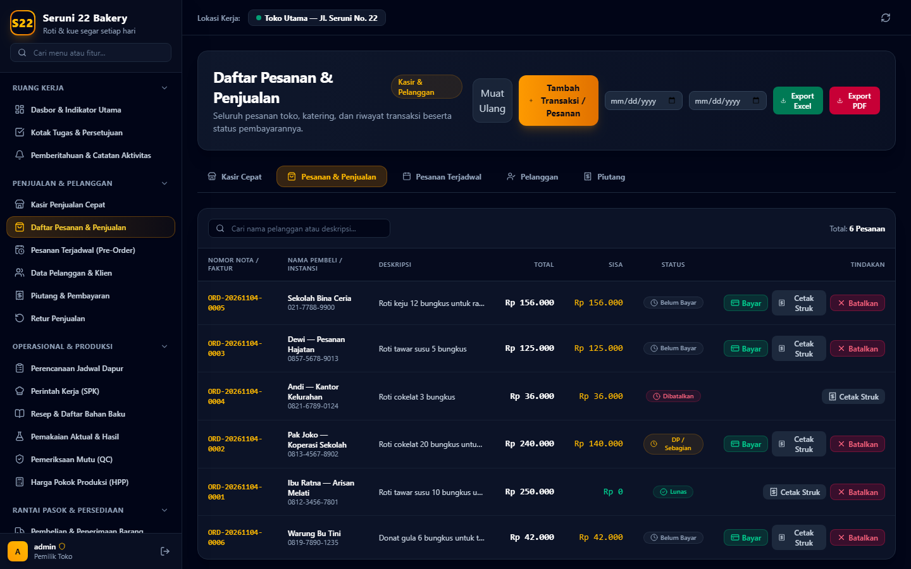
Kolom yang tersedia:
| Kolom | Arti |
|---|---|
| Nomor Nota / Faktur | Nomor unik pesanan, misalnya ORD-20261104-0002. |
| Nama Pembeli / Instansi | Nama pelanggan yang diisi saat pesanan dibuat. |
| Deskripsi | Ringkasan barang yang dipesan. |
| Jadwal Ambil | Tanggal pengambilan pesanan. |
| Total, Sisa | Nilai pesanan dan sisa yang belum dibayar. |
| Status | Lunas, DP / Sebagian, Belum Bayar, atau Dibatalkan. |
| Tindakan | Tombol Bayar, Cetak Struk, dan Batalkan sesuai status dan peran. |
Gunakan kotak Cari nama pelanggan atau deskripsi... untuk menyaring. Bila daftar panjang, tekan Muat lagi di bagian bawah untuk memuat pesanan berikutnya.
Pembatalan tidak dapat diurungkan dari layar. Pesanan tetap terlihat di riwayat dengan status Dibatalkan, sehingga jejaknya tidak hilang. Hanya Pemilik Toko dan Manajer Operasional yang dapat membatalkan pesanan.
Berkas ekspor memakai nama dan logo toko dari Pengaturan Toko & Cabang. Periksa kembali isi berkas sebelum dikirim ke pihak luar.
Pre-order adalah pesanan yang diambil pada hari ini atau hari berikutnya. Layar ini menyaring pesanan tersebut dan mengurutkannya dari jadwal pengambilan terdekat sehingga dapur dan kasir dapat bersiap.
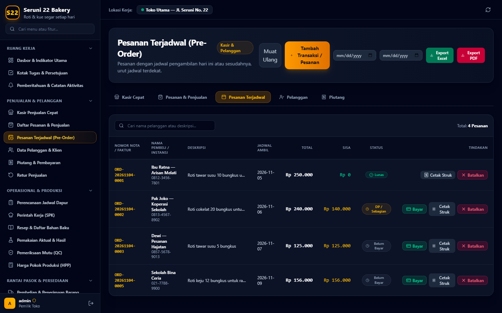
Tidak ada formulir terpisah untuk pre-order. Pesanan otomatis tampil di sini bila tanggal pickup-nya adalah hari ini atau sesudahnya. Buat pesanannya lewat Tambah Transaksi / Pesanan seperti pada Bab 6, lalu isi Tanggal Pickup sesuai janji ke pelanggan.
Pesanan yang jadwalnya sudah lewat tidak lagi ditampilkan di layar ini. Pesanan tersebut tetap ada di Daftar Pesanan & Penjualan dan dapat muncul sebagai tugas atau notifikasi bila perlu ditindaklanjuti.
Layar pre-order hanya menyaring dan mengurutkan. Perubahan status pembayaran, stok, dan jurnal tetap dilakukan dari pesanan dan pembayaran yang sama seperti transaksi biasa.
Untuk pesanan besar, isi deskripsi sedetail mungkin (jumlah per jenis, tulisan pada kemasan, jam pengambilan). Deskripsi ini yang dibaca dapur dan kasir pada layar Perencanaan Jadwal Dapur serta Daftar Pesanan.
Layar ini menyimpan nama, kontak, poin loyalitas, dan catatan pelanggan. Data terbentuk otomatis saat pesanan pertama disimpan, sehingga kasir tidak perlu mengetik ulang.
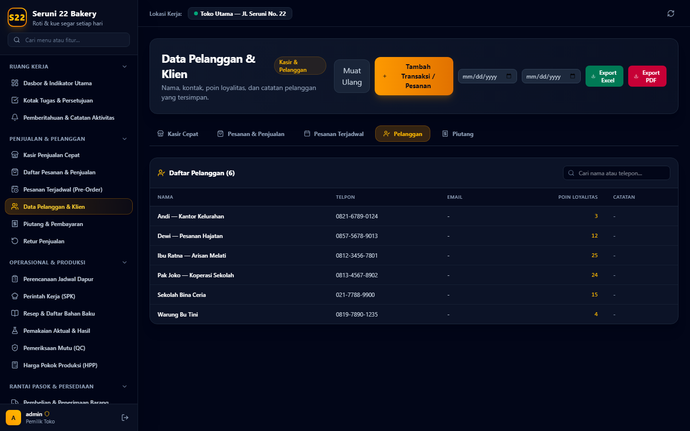
Setiap kali pesanan disimpan pada Bab 6 atau Bab 7, nama pelanggan dicatat sebagai data pelanggan. Nomor telepon yang diisi ikut tersimpan. Layar ini dipakai untuk mencari dan memeriksa data tersebut, bukan untuk membuat pesanan.
Bila daftar masih kosong, artinya belum ada pesanan yang tercatat. Pesan di layar menyebutkan bahwa pelanggan tercatat saat pesanan pertama dibuat.
Gunakan nomor telepon sebagai pembeda ketika ada pelanggan dengan nama sama. Sebelum membuat pesanan baru untuk pelanggan lama, cari namanya di sini agar riwayat dan poin loyalitasnya tetap menyatu.
Menu ini mengumpulkan pesanan yang belum lunas beserta sisa tagihannya. Dari sini kasir menerima pelunasan, dan pesanan berubah menjadi lunas tanpa perlu membuat nota baru.
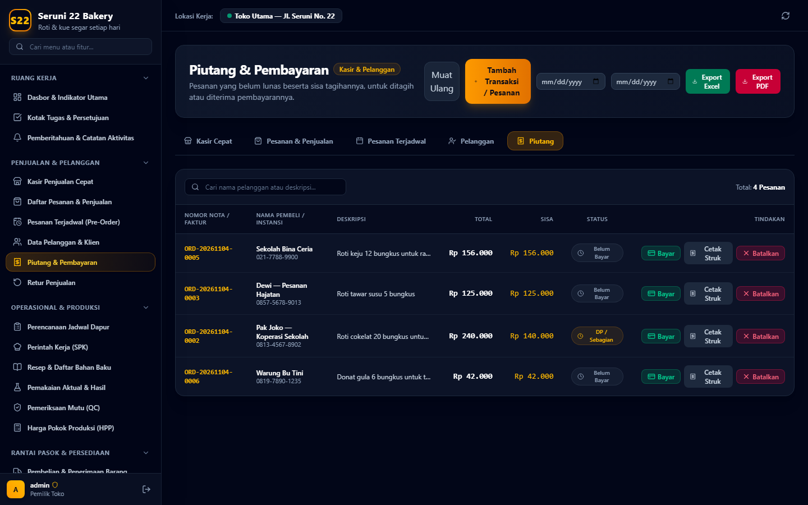
Bila layar menampilkan pesan bahwa tidak ada pesanan dengan sisa tagihan, berarti semua pesanan sudah lunas atau dibatalkan.
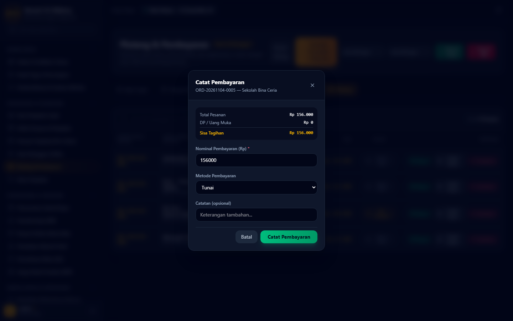
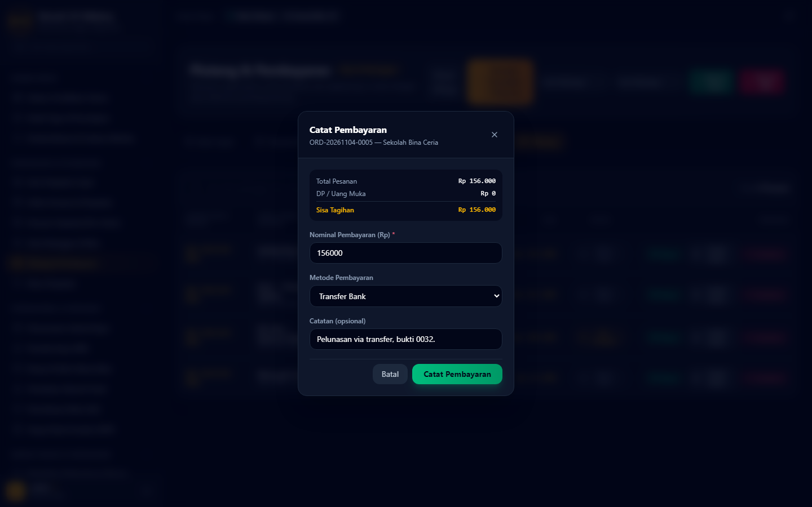
| Label di layar | Isi contoh |
|---|---|
| Judul di bawah Catat Pembayaran | ORD-20261104-0005 — Sekolah Bina Ceria |
| Total Pesanan | Rp 156.000 |
| DP / Uang Muka | Rp 0 |
| Sisa Tagihan | Rp 156.000 |
| Nominal Pembayaran (Rp) * | 156000 — terisi otomatis saat tombol Bayar ditekan |
| Metode Pembayaran | Transfer Bank |
| Catatan (opsional) | Pelunasan via transfer, bukti 0032. |
Pesanan ini adalah 12 bungkus Roti Keju untuk rapat guru (12 × Rp 13.000 = Rp 156.000). Nominal sebesar sisa tagihan membuat pesanan langsung Lunas dan stok Roti Keju di etalase berkurang 12 unit. Sebagian pelunasan juga sah: ORD-20261104-0002 (Pak Joko, total Rp 240.000) misalnya dibayar Rp 100.000 sebagai DP saat pesanan dibuat, sehingga layar ini masih menunjukkan Sisa Tagihan Rp 140.000.
Nominal yang melebihi sisa tagihan ditolak server dengan pesan seperti Pembayaran Rp 200.000 melebihi sisa bayar Rp 156.000. — tidak ada uang yang tercatat dua kali.
Saat pesanan menjadi lunas, stok produk jadi di etalase berkurang sesuai jumlah yang dipesan, dan pembayaran ikut tercatat pada buku kas serta jurnal. Karena itu, jangan mencatat pelunasan dua kali untuk pesanan yang sama.
Sama seperti di kasir, server versi 1.2.13 hanya menerima Tunai dan Transfer Bank. Opsi QRIS dan Kartu Debit yang tampil belum diterima. Pilih Transfer Bank dan tulis keterangan di Catatan bila uang masuk melalui QRIS atau kartu.
Gunakan menu ini bersama Kotak Tugas. Tugas piutang yang muncul di sana menunjukkan tagihan yang perlu ditagih, sedangkan pelunasan tetap dicatat di layar ini.
Retur mencatat pengembalian barang dari pesanan yang sudah lunas. Uang kembali kepada pelanggan, stok produk jadi kembali ke etalase, dan pendapatan dikurangi melalui jurnal.
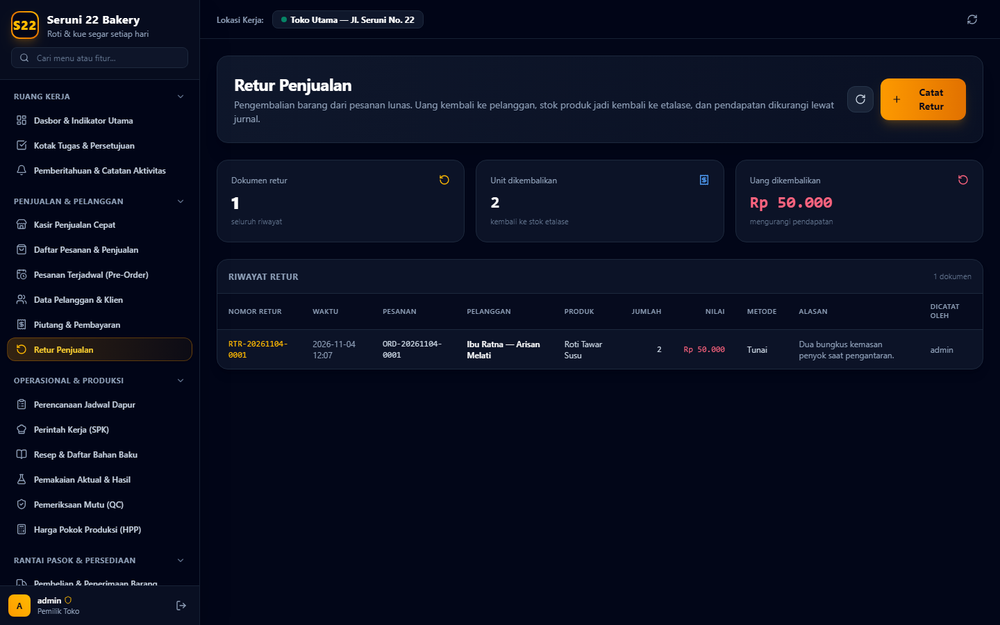
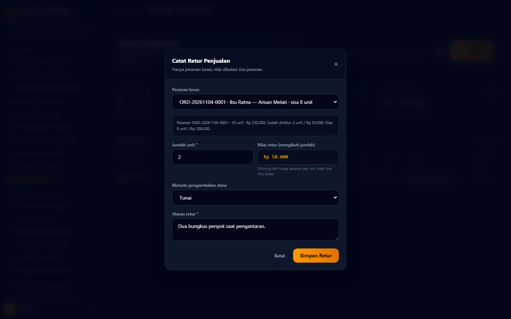
| Label di layar | Isi contoh |
|---|---|
| Pesanan lunas | ORD-20261104-0001 · Ibu Ratna - Arisan Melati · sisa 8 unit |
| Jumlah unit * | 2 |
| Metode pengembalian dana | Tunai |
| Alasan retur * | Dua bungkus penyok saat pengantaran. |
Tulisan sisa 8 unit pada pilihan pesanan bukan hiasan: pesanan itu dibeli 10 unit
dan tidak pernah diretur, jadi hanya 10 unit yang boleh dikembalikan. Harga per unit
pesanan ini Rp 25.000, sehingga retur 2 unit menghasilkan pengembalian uang
Rp 50.000. Dokumen yang tersimpan bernama RTR-20261104-0001 dan tercatat di
riwayat dengan produk Roti Tawar Susu, metode Tunai, dan pencatat
admin.
Isi Jumlah unit * lebih besar dari sisa unit yang bisa diretur dan aplikasi menolak dengan pesan seperti Jumlah retur melebihi sisa yang bisa diretur (8 unit). Nominal pengembalian tidak dapat diketik bebas; server menghitungnya dari harga pesanan per unit dan menolak bila nilainya melebihi sisa nilai pesanan (Nilai retur melebihi sisa nilai pesanan (…)).
Tiga kotak ringkasan menunjukkan Dokumen retur, Unit dikembalikan, dan Uang dikembalikan. Tabel Riwayat Retur memuat kolom Nomor retur, Waktu, Pesanan, Pelanggan, Produk, Jumlah, Nilai, Metode, Alasan, dan Dicatat oleh.
Retur mengeluarkan uang dan mengembalikan stok. Hanya Pemilik Toko dan Manajer Operasional yang dapat mencatat retur. Periksa jumlah unit dan alasan sebelum menyimpan; dokumen yang sudah tercatat tidak dapat dihapus dari layar.
Retur adalah dokumen terpisah dengan nomor sendiri, misalnya RTR-20261104-0001.
Pesanan aslinya tidak diubah dan tetap tampil di Daftar Pesanan & Penjualan.
Catat retur pada hari yang sama saat barang dikembalikan agar uang, stok, dan laporan harian tetap cocok. Simpan barang yang diretur terpisah sampai alasannya diperiksa.
Layar ini menampilkan SPK yang masih berstatus terjadwal dan belum mulai dikerjakan. Gunakan untuk melihat antrean dapur, memastikan bahan siap, dan menentukan pekerjaan mana yang dikerjakan lebih dahulu.
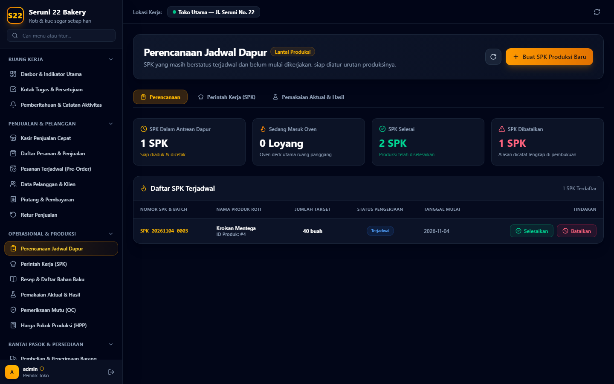
Empat kartu di bagian atas menunjukkan keadaan lantai produksi:
| Kartu | Arti |
|---|---|
| SPK Dalam Antrean Dapur Siap diaduk & dicetak | SPK yang sudah dibuat dan menunggu dikerjakan. |
| Sedang Masuk Oven Oven deck utama ruang panggang | SPK yang sedang diproses. |
| SPK Selesai | SPK yang hasilnya sudah dicatat. |
| SPK Dibatalkan | SPK yang dibatalkan beserta alasannya. |
Tabel Daftar SPK Terjadwal memuat kolom Nomor SPK & Batch, Nama Produk Roti, Jumlah Target, Status Pengerjaan, Tanggal Mulai, dan Tindakan.
Layar perencanaan hanya menampilkan SPK yang belum mulai. Setelah SPK diproses atau selesai, ia berpindah ke tab Perintah Kerja (SPK) dan Pemakaian Aktual & Hasil.
Periksa antrean ini sebelum memesan bahan baru. Bila masih ada SPK yang menunggu dengan bahan yang sama, selesaikan dulu agar stok tidak menumpuk atau kedaluwarsa.
SPK adalah perintah produksi untuk sejumlah target produk. Menu ini mencatat pembuatan SPK, pemakaian bahan aktual, hasil baik dan gagal, serta akibatnya pada stok etalase, jurnal, dan HPP.
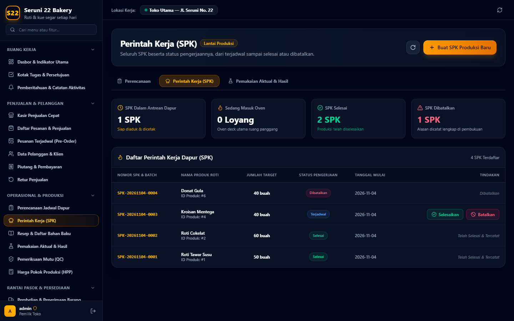
Layar ini memiliki tab Perencanaan, Perintah Kerja (SPK), dan Pemakaian Aktual & Hasil. Tombol Buat SPK Produksi Baru membuka formulir SPK. Pada setiap baris tersedia tindakan Selesaikan, Batalkan, atau Hanya lihat, tergantung status dan peran Anda.
Status SPK yang mungkin terlihat: Terjadwal, Diproses, Selesai, dan
Dibatalkan. Nomor SPK, misalnya SPK-20261104-0001, dipakai untuk
merujuk pekerjaan ini di layar QC dan HPP.
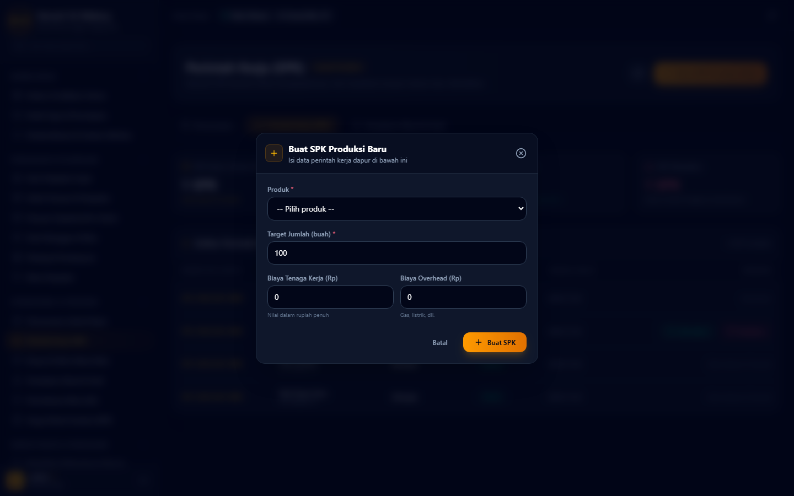
Kebutuhan bahan dihitung dari resep produk × target jumlah. Anda tidak perlu mengetik daftar bahan saat membuat SPK.
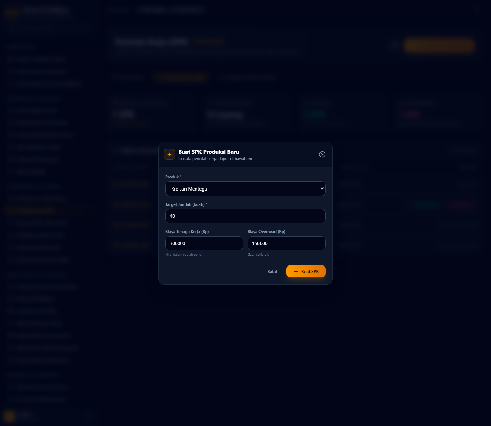
| Label di layar | Isi contoh |
|---|---|
| Produk * | Kroisan Mentega |
| Target Jumlah (buah) * | 40 |
| Biaya Tenaga Kerja (Rp) | 300000 |
| Biaya Overhead (Rp) | 150000 |
Empat baris bahan langsung ikut terhitung dari resep kroisan (tepung 0,1 kg; mentega 0,05 kg; gula 0,01 kg; ragi 0,002 kg per buah), sehingga target 40 buah berarti 4 kg tepung, 2 kg mentega, 0,4 kg gula, dan 0,08 kg ragi. Nilai itulah yang tampil pada kolom Standar Resep di dialog penyelesaian (Bab 13.4).
SPK contoh yang tersimpan di data contoh memakai angka yang sama: SPK-20261104-0003 Kroisan Mentega, target 40, tenaga kerja Rp 300.000, overhead Rp 150.000, dan kebutuhan bahan Rp 133.600 tercatat pada kolom biaya bahan. Dua SPK lain sudah diselesaikan (SPK-20261104-0001 Roti Tawar Susu dan SPK-20261104-0002 Roti Cokelat), satu SPK dibatalkan (SPK-20261104-0004 Donat Gula) dan tetap tampil di Pemakaian Aktual & Hasil.
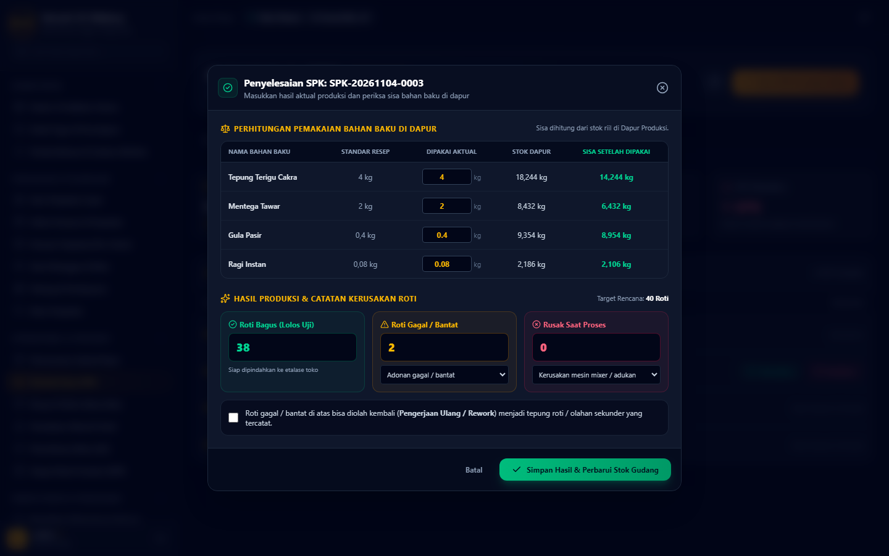
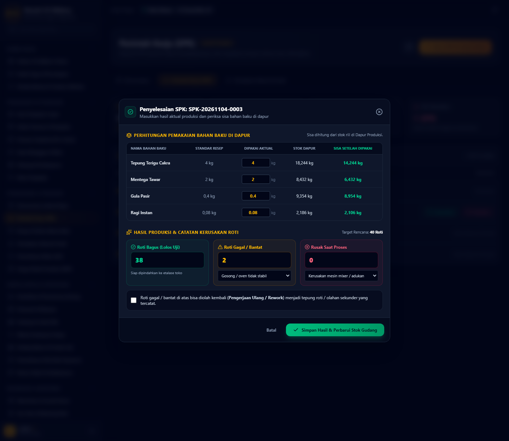
| Label di layar | Isi contoh |
|---|---|
| Perhitungan Pemakaian Bahan Baku di Dapur | Tepung Terigu Cakra Standar Resep 4 kg, Dipakai Aktual 4 kg, Stok Dapur 18,244 kg, Sisa Setelah Dipakai 14,244 kg |
| baris bahan berikutnya pada tabel yang sama | Mentega Tawar 2 kg → sisa 6,432 kg; Gula Pasir 0,4 kg → sisa 8,954 kg; Ragi Instan 0,08 kg → sisa 2,106 kg. Semua Dipakai Aktual dibiarkan sama dengan Standar Resep, keempat Sisa Setelah Dipakai tampil hijau karena stok dapur mencukupi. |
| Target Rencana | 40 Roti |
| Roti Bagus (Lolos Uji) | 38 — keterangan di bawahnya Siap dipindahkan ke etalase toko |
| Roti Gagal / Bantat | 2, alasan Gosong / oven tidak stabil |
| Rusak Saat Proses | 0, alasan Kerusakan mesin mixer / adukan |
| Kotang Roti gagal / bantat di atas bisa diolah kembali (Pengerjaan Ulang / Rework) | tidak dicentang |
Setelah Simpan Hasil & Perbarui Stok Gudang, 38 unit masuk ke Etalase Toko & Kasir, keempat bahan dikurangkan dari stok Dapur Produksi, dan kerugian 2 unit dibukukan sebagai beban kerugian. Dua SPK contoh yang sudah tersimpan memperlihatkan hasil akhirnya: SPK-20261104-0001 Roti Tawar Susu target 50 → 48 bagus dan 2 gagal dengan biaya bahan Rp 347.410, tenaga kerja Rp 350.000, overhead Rp 180.000; SPK-20261104-0002 Roti Cokelat target 60 → 57 bagus dan 3 gagal dengan biaya bahan Rp 204.366, tenaga kerja Rp 320.000, overhead Rp 150.000.
Pilihan alasan di bawah Roti Gagal / Bantat: Adonan gagal / bantat, Gosong / oven tidak stabil, Salah takaran resep, dan Ragi tidak aktif / mati. Pilihan di bawah Rusak Saat Proses: Kerusakan mesin mixer / adukan, Jatuh saat pemindahan loyang, Bentuk loyang cacat, dan Alasan lainnya. Bila bahan yang dipakai melebihi stok dapur, penyimpanan ditolak server dan dialog tetap terbuka — perbaiki Dipakai Aktual atau kirim bahan dulu lewat Mutasi Gudang ke Dapur (Bab 21).
Setiap bahan dalam resep harus tercatat tepat satu kali. Sistem menolak penyelesaian bila ada bahan yang belum diisi atau bila jumlahnya tidak wajar. Jumlah roti bagus ditambahkan ke stok Etalase, sedangkan biaya tenaga kerja dan overhead dibukukan ke jurnal. Data ini juga menjadi dasar HPP aktual pada Bab 17.
Pada SPK yang menghasilkan unit baik, biaya tenaga kerja dan overhead tidak lagi habis sebagai beban bulan berjalan. Keduanya ikut dikapitalisasi ke nilai persediaan produk jadi: jurnal memindahkan bahan yang lolos plus tenaga kerja dan overhead ke debit 1-006 Persediaan Produk Jadi (Etalase), dan kredit 1-001 Kas & Bank sebesar biaya tunai itu. HPP per unit yang menempel di stok adalah rata-rata (bahan + tenaga kerja + overhead − kerugian) dibagi unit baik, dibulatkan ke sen terdekat. Karena harga pokok per unit berupa bilangan bulat, sisa pembulatan — paling besar setengah sen per unit — dibukukan ke 5-006 Beban Selisih Persediaan agar jurnal tetap seimbang dan saldo 1-006 sama dengan nilai stok. Bila SPK tidak menghasilkan satu unit baik pun, tenaga kerja dibebankan ke 5-003 Beban Gaji dan overhead ke 5-002 Beban Operasional, karena tidak ada stok yang bisa menopang biaya itu.
Bila server menolak (misalnya pemakaian bahan melebihi stok dapur), pesan seperti Hasil produksi gagal disimpan. muncul di bagian bawah dialog dan dialog tidak tertutup: angka yang sudah diketik dapur tetap ada untuk diperbaiki. Sebaliknya, bila rincian bahan gagal dimuat saat dialog dibuka, muncul peringatan Resep SPK gagal dimuat; pemakaian bahan belum bisa diperiksa. di bagian atas dialog. Tutup dan buka lagi dialognya daripada menyimpan tanpa daftar bahan.
SPK yang sudah selesai tidak dapat dibatalkan. Pembatalan hanya berlaku untuk SPK berstatus Terjadwal atau Diproses, dan hanya dapat dilakukan Pemilik Toko atau Manajer Operasional. Bila perlu membatalkan, isi alasannya dengan jelas karena alasan tersebut tersimpan di riwayat.
Timbang bahan sebelum produksi dan catat pemakaian aktual apa adanya. Selisih kecil antara standar dan aktual adalah informasi berharga untuk menghitung HPP dan menekan pemborosan, bukan kesalahan yang perlu disembunyikan.
Di sinilah katalog produk dan bahan baku dikelola. Resep menentukan bahan yang dibutuhkan SPK, sedangkan harga bahan dan harga jual menentukan HPP serta margin yang tampil di layar lain. Tab Bahan Baku pada layar ini adalah tempat pengisian pertama: bahan yang belum dibuat di sini tidak akan bisa dipilih pada baris PO maupun pada opname stok.
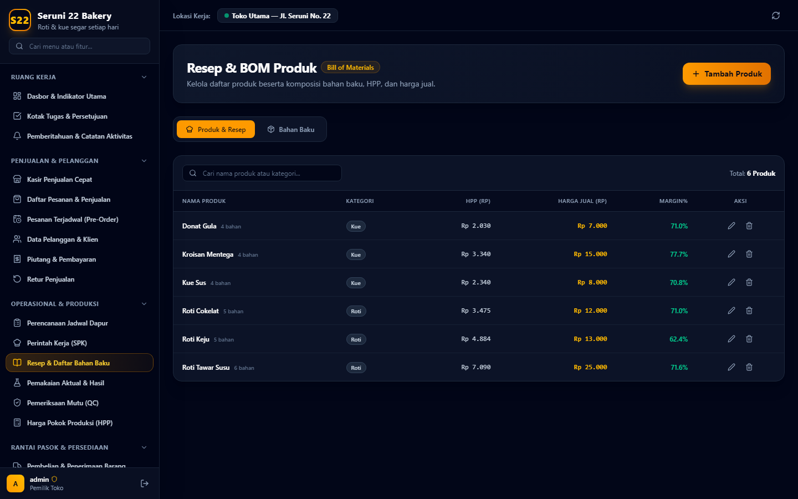
Tombol Tambah Produk dan Tambah Bahan membuka formulir baru. Ikon pensil membuka formulir ubah, sedangkan ikon nonaktif mengeluarkan produk atau bahan dari daftar aktif setelah Anda mengonfirmasi.
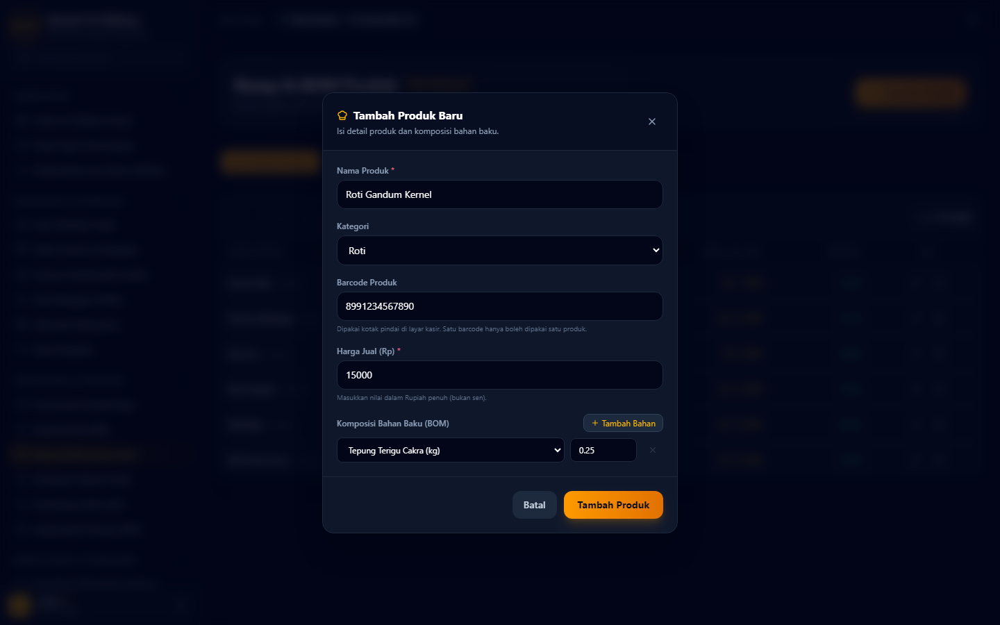
| Label di layar | Isi contoh |
|---|---|
| Nama Produk * | Roti Gandum Kernel |
| Kategori | Roti |
| Barcode Produk | 8991234567890 |
| Harga Jual (Rp) * | 15000 |
| Komposisi Bahan Baku (BOM) — baris 1 | Tepung Terigu Cakra (kg), Qty 0.25 |
Enam produk contoh yang benar-benar tersimpan memakai harga dan barcode katalog: Roti Tawar Susu Rp 25.000 (barcode 8996442109, 6 baris resep), Roti Cokelat Rp 12.000 (8994314117, 5 baris), Roti Keju Rp 13.000 (8996118312, 5 baris), Kroisan Mentega Rp 15.000 (8999085969, 4 baris), Kue Sus Rp 8.000 (8992833588, 4 baris), dan Donat Gula Rp 7.000 (899242953, 4 baris). Dari resep itulah HPP standar dihitung, misalnya Roti Tawar Susu Rp 7.090 per unit dengan margin 71,6 % dan Kroisan Mentega Rp 3.340 per unit dengan margin 77,7 % (Bab 17).
Produk tanpa Barcode Produk tidak dapat dipilih lewat pemindai di kasir, tetapi tetap muncul di daftar Produk.
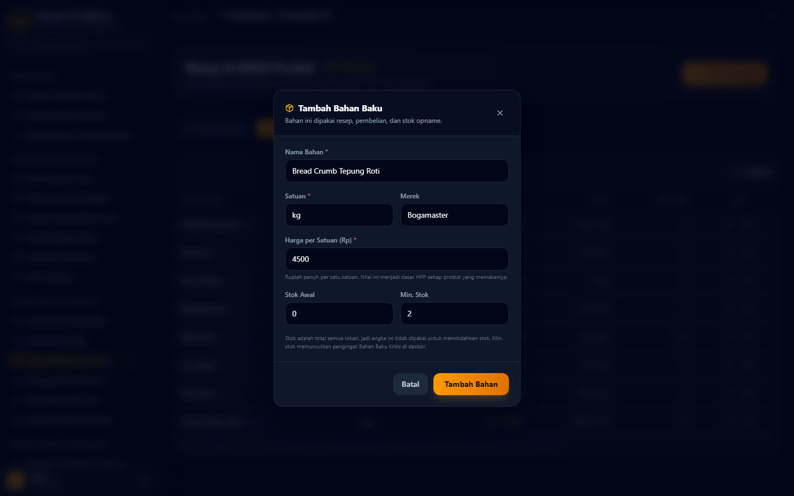
| Label di layar | Isi contoh |
|---|---|
| Nama Bahan * | Bread Crumb Tepung Roti |
| Satuan * | kg |
| Merek | Bogamaster |
| Harga per Satuan (Rp) * | 4500 |
| Stok Awal | 0 — stok datang bersama penerimaan barang |
| Min. Stok | 2 |
Delapan bahan contoh yang tersimpan menjadi dasar seluruh perhitungan biaya: Tepung Terigu Cakra Rp 14.000/kg (min. 15), Gula Pasir Rp 16.000/kg (min. 5), Mentega Tawar Rp 32.000/kg (min. 4), Ragi Instan Rp 90.000/kg (min. 0,5), Telur Ayam Rp 28.000/kg (min. 3), Susu Bubuk Rp 85.000/kg (min. 1), Cokelat Compound Rp 65.000/kg (min. 2), dan Keju Cheddar Rp 120.000/kg (min. 1). Satuan yang Anda isi di sini adalah satuan yang wajib dipakai di baris PO dan di baris resep — aplikasi menolaknya bila berbeda.
Angka pada Stok Awal menggerakkan stok dan sekaligus membuat jurnalnya. Stok awal didebitkan ke akun persediaan lokasi (1-003 Persediaan Bahan Baku (Gudang)) dan dikreditkan ke 3-001 Modal — barang yang dibuka pada awal periode bukan pembelian dan bukan beban. Mengubah Stok Saat Ini pada formulir ubah hanya membukukan selisihnya, seperti hasil hitung fisik: stok naik menjadi debit persediaan melawan kredit 5-006 Beban Selisih Persediaan, stok turun dibalik. Nilainya dihitung dari Harga per Satuan (Rp) yang tersimpan pada bahan tersebut. Karena stok yang diketik di layar ini kini ikut dibukukan, saldo 1-003 tidak lagi tertinggal dari barang yang ada di rak, dan kolom ini tidak perlu dihindari lagi.
Basis data yang terlanjur menumpuk stok dari kolom ini sebelum perbaikan dikenali oleh Periksa Basis Data: pemeriksaan stok layar Bahan Baku punya jurnal menjadi merah dan menyebut nama bahan, jumlah, serta nilainya. Buku stok lama itu perlu dibukukan sekali — lewat Pemeriksaan Fisik (Stok Opname) (Bab 23) atau jurnal manual di Buku Besar & Jurnal Umum — karena aplikasi tidak menambal pembukuan lama dengan sendirinya.
Status rilis: perilaku di atas ada di sumber setelah paket 1.2.13 dan belum ikut
terpasang pada berkas Seruni22Bakery_Setup_v1.2.13.exe. Pada paket 1.2.13 yang
terpasang sekarang, Stok Awal masih hanya menggerakkan stok tanpa membuat jurnal,
sehingga cara lama (biarkan kosong atau 0, lalu catat stok fisik lewat opname) tetap
berlaku sampai versi berikutnya dikemas.
Kolom stok pada formulir bahan adalah total semua lokasi dan bukan alat untuk memindahkan stok. Perpindahan barang dilakukan lewat Mutasi Gudang ke Dapur, sedangkan penyetelan hasil hitung fisik dilakukan lewat Pemeriksaan Fisik (Stok Opname). Batas minimum yang Anda isi memunculkan pengingat Bahan Baku Kritis di dasbor.
Menonaktifkan produk atau bahan akan menyembunyikannya dari pilihan resep, pembelian, dan kasir. Data lama tidak dihapus, tetapi jangan menonaktifkan bahan yang masih dipakai resep aktif tanpa menggantinya lebih dahulu.
Perbarui harga bahan setiap kali menerima barang dengan harga baru. HPP standar memakai harga bahan saat ini, sehingga harga yang usang membuat margin terlihat lebih baik daripada kenyataan.
Layar ini adalah arsip produksi: SPK yang sudah selesai atau dibatalkan beserta pemakaian bahan aktual dan hasilnya. Isinya dipakai untuk memeriksa efisiensi dapur dan menjadi bahan pemeriksaan mutu serta HPP.
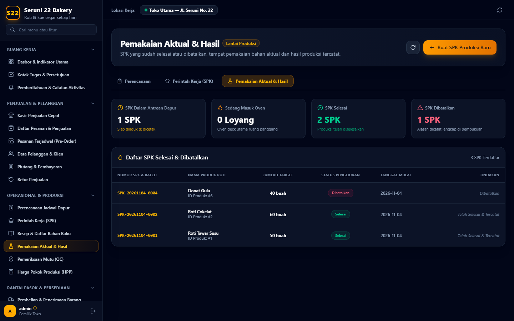
Layar ini bersifat arsip. Angka pemakaian dan hasil tidak diubah di sini; catatan dihasilkan saat SPK diselesaikan pada Bab 13. Bila ada kekeliruan, perbaiki proses pada SPK berikutnya dan catat temuan untuk pemilik toko.
Bila hasil gagal berulang pada produk yang sama, periksa takaran resep, kualitas bahan, dan suhu oven. Riwayat beberapa SPK di layar ini membantu melihat apakah masalahnya sesekali atau berulang.
QC mencatat hasil pemeriksaan sampel produk per SPK: jumlah sampel, jumlah lulus dan gagal, serta catatan tampilan dan rasa. Keputusan lulus atau gagal dihitung server dari angka yang dikirim.
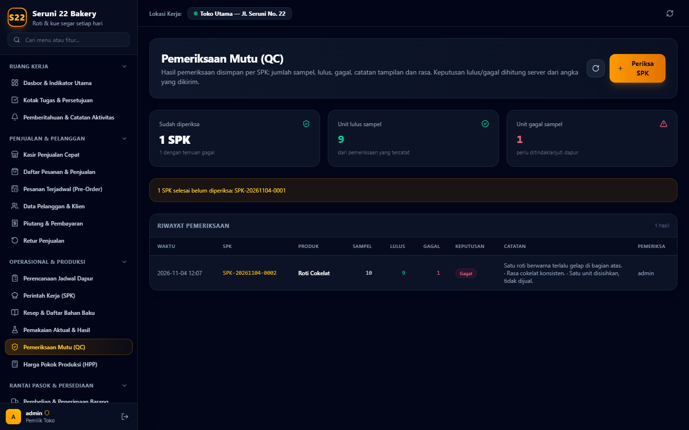
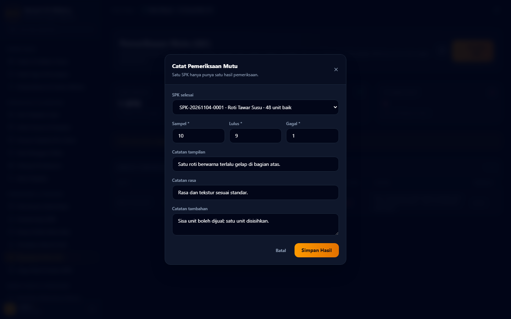
| Label di layar | Isi contoh |
|---|---|
| SPK selesai | SPK-20261104-0001 · Roti Tawar Susu · 48 unit baik |
| Sampel * | 10 |
| Lulus * | 9 |
| Gagal * | 1 |
| Catatan tampilan | Satu roti berwarna terlalu gelap di bagian atas. |
| Catatan rasa | Rasa dan tekstur sesuai standar. |
| Catatan tambahan | Sisa unit boleh dijual; satu unit disisihkan. |
Karena Gagal * terisi 1, keputusan yang tersimpan adalah Gagal (badge merah
di riwayat). Pemeriksaan contoh yang tercatat di data contoh memakai angka yang sama pada
SPK lain: SPK-20261104-0002 Roti Cokelat, sampel 10, lulus 9, gagal 1,
keputusan Gagal, dicatat oleh admin. Tiga kartu ringkasan layar ini
karenanya membaca Sudah diperiksa 1 SPK dengan keterangan
"1 dengan temuan gagal", Unit lulus sampel 9, dan
Unit gagal sampel 1. Di bawahnya ada peringatan
"1 SPK selesai belum diperiksa: SPK-20261104-0001". SPK itu memang sengaja
dibiarkan belum diperiksa agar tombol Periksa SPK tetap dapat ditekan —
tombol tersebut dinonaktifkan selama semua SPK selesai sudah ada hasil pemeriksaannya.
Jumlah Lulus * dan Gagal * tidak boleh melebihi Sampel *; server menolak dengan pesan Jumlah lulus + gagal melebihi jumlah sampel.
Tiga kotak menunjukkan Sudah diperiksa, Unit lulus sampel, dan Unit gagal sampel. Bila ada SPK selesai yang belum diperiksa, layar menampilkan peringatan beserta nomornya. Tabel Riwayat Pemeriksaan memuat kolom Waktu, SPK, Produk, Sampel, Lulus, Gagal, Keputusan, Catatan, dan Pemeriksa.
Jumlah lulus dan gagal sebaiknya dijumlahkan dengan jumlah sampel. Keputusan akhir dihitung server, bukan diketik manual, sehingga hasil di riwayat konsisten.
Periksa sampel dari beberapa loyang, bukan hanya satu, lalu catat perbedaan tampilan atau rasa secara konkret. Catatan yang spesifik membantu dapur memperbaiki proses pada produksi berikutnya.
Layar ini membandingkan HPP standar dari resep dengan HPP aktual dari SPK yang sudah selesai, lalu menunjukkan margin terhadap harga jual katalog.
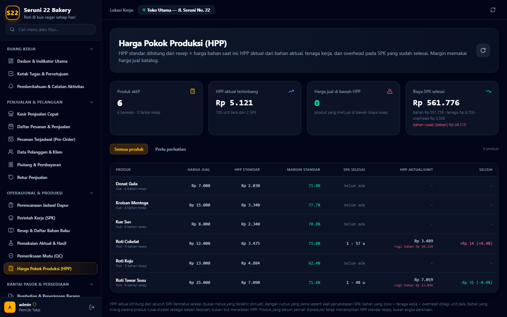
| Jenis | Dasar perhitungan |
|---|---|
| HPP standar | Resep × harga bahan saat ini. Berguna untuk menetapkan harga jual sebelum produksi. |
| HPP aktual | Pemakaian bahan aktual, biaya tenaga kerja, dan overhead pada SPK yang sudah selesai. Berguna untuk melihat biaya nyata per unit. |
Sejak 1.2.13, tenaga kerja dan overhead SPK yang menghasilkan unit ikut dibawa sebagai nilai persediaan (didebit ke 1-006 Persediaan Produk Jadi (Etalase) bersama bahan), bukan habis sebagai beban bulan berjalan. Rinciannya ada di Bab 13. Karena itu, HPP aktual per unit dan saldo akun 1-006 kini memuat ketiga komponen biaya, dan saldo 1-006 tetap sama dengan nilai stok yang dihitung dari harga rata-rata.
Filter Semua produk menampilkan seluruh produk aktif. Pilih Perlu perhatian untuk menyaring produk yang harga jualnya di bawah HPP atau biaya aktualnya melebihi standar. Kolom yang tersedia: Produk, Harga jual, HPP standar, Margin standar, SPK selesai, HPP aktual/unit, dan Selisih.
HPP aktual hanya muncul untuk produk yang sudah memiliki SPK selesai. Produk baru dengan resep tetapi belum pernah diproduksi akan menampilkan tanda belum ada pada kolom biaya aktual.
Periksa HPP setelah menerima barang dengan harga baru atau setelah beberapa SPK selesai. Menyesuaikan harga jual berdasarkan HPP aktual lebih aman daripada berdasarkan perkiraan.
Menu ini mencatat pesanan pembelian ke pemasok dan penerimaan barangnya. Penerimaan menambah stok di lokasi yang dipilih, memperbarui status PO, dan mencatat utang usaha.
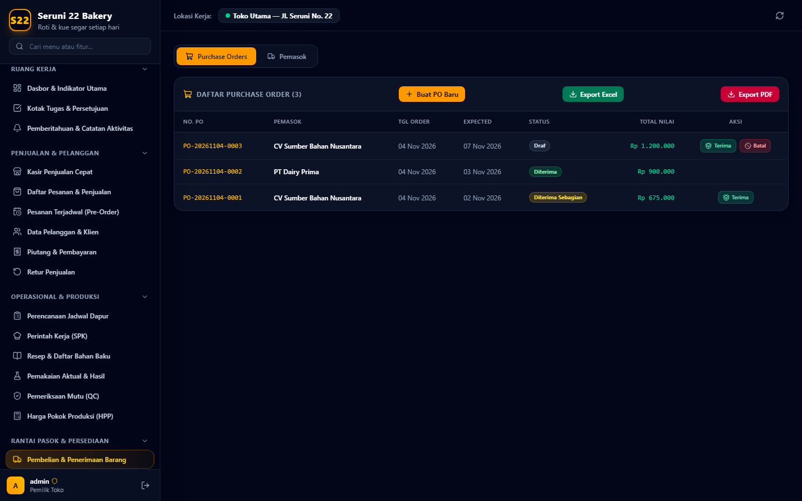
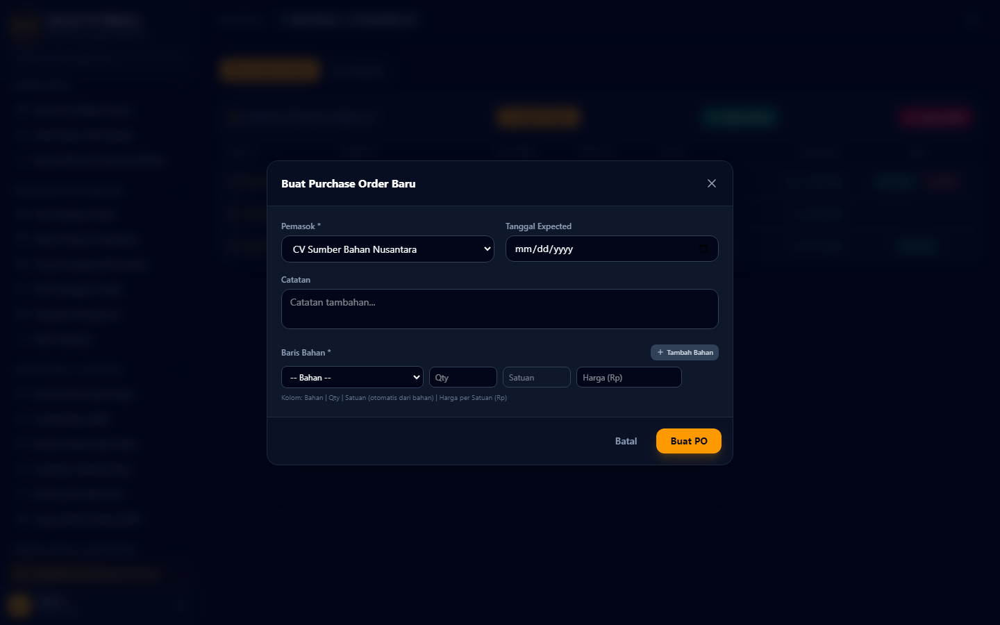
PO adalah langkah ketiga, bukan pertama. Urutan pengisian yang benar adalah isi bahan → tambah pemasok → buat PO, seperti dijelaskan di Bab 0.6.1. Aplikasi menolak PO yang menunjuk bahan atau pemasok yang belum terdaftar.
PO baru muncul di daftar dengan status Draf. Nomor PO, misalnya
PO-20261104-0003, dipakai untuk merujuk dokumen ini saat penerimaan.
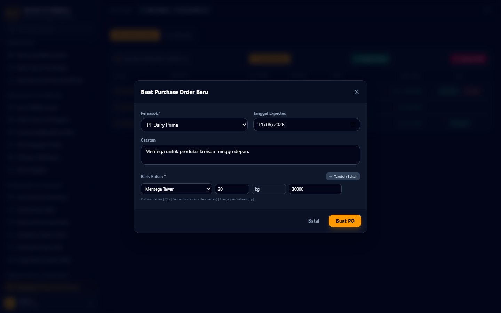
| Label di layar | Isi contoh |
|---|---|
| Pemasok * | PT Dairy Prima |
| Tanggal Expected | 2026-11-06 (kolom tanggal menampilkannya 11/06/2026) |
| Catatan | Mentega untuk produksi kroisan minggu depan. |
| Baris Bahan * — dropdown bahan | Mentega Tawar |
| kolom Qty | 20 |
| kolom Satuan | kg — terisi otomatis, tidak dapat diketik |
| kolom Harga (Rp) | 30000 (Rp 30.000 per kg) |
| tombol penyimpanan | Buat PO |
Baris pertama Baris Bahan * sudah ada ketika formulir terbuka, jadi untuk pesanan satu bahan tombol Tambah Bahan tidak perlu ditekan. Teks bantu di bawah baris mengingatkan urutan kolomnya: Kolom: Bahan | Qty | Satuan (otomatis dari bahan) | Harga per Satuan (Rp).
Yang benar-benar tersimpan di data contoh adalah tiga PO lain, bukan isian formulir di atas: PO-20261104-0001 (CV Sumber Bahan Nusantara, Tepung Terigu Cakra 50 kg @Rp 13.500; baru diterima 30 kg sehingga statusnya Diterima Sebagian), PO-20261104-0002 (PT Dairy Prima, Mentega Tawar 30 kg @Rp 30.000; status Diterima), dan PO-20261104-0003 (CV Sumber Bahan Nusantara, Cokelat Compound 20 kg @Rp 60.000; masih Draf, belum ada barang diterima). Harga per satuan di PO memakai rupiah penuh, sama seperti kolom Harga (Rp) pada gambar.
Satuan mengikuti master bahan agar jumlah yang dipesan dan diterima memakai ukuran yang sama. Bila satuan yang dibutuhkan berbeda, ubah satuannya di Resep & Daftar Bahan Baku sebelum membuat PO, jangan mencampur satuan dalam satu baris.
Sejak 1.2.13, penolakan tampil di dalam formulir yang sedang terbuka sehingga nomor PO, harga, dan baris yang sudah diketik tidak hilang. Yang paling sering terjadi:
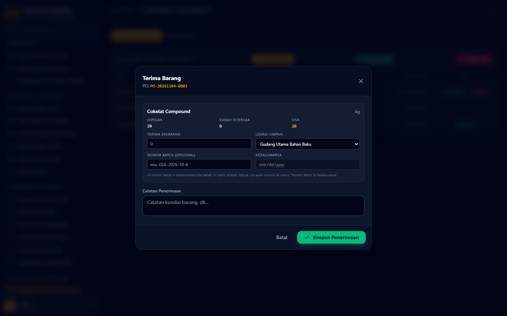
Setelah disimpan, stok bertambah di lokasi yang dipilih. Status PO menjadi Diterima Sebagian atau Diterima, dan lot baru muncul di menu Nomor Batch & Kedaluwarsa.
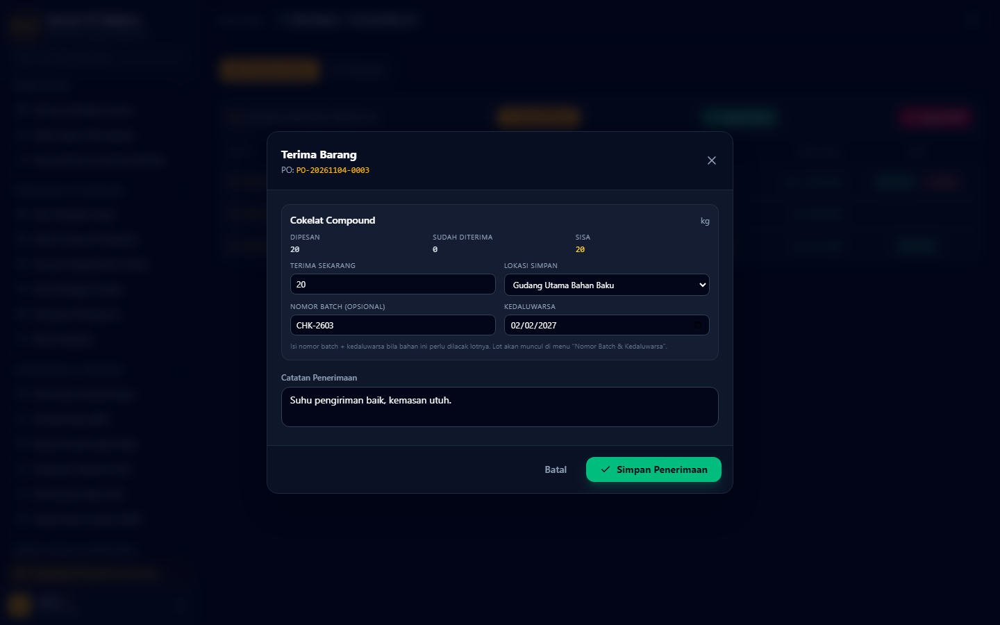
| Label di layar | Isi contoh |
|---|---|
| baris di bawah judul | PO: PO-20261104-0003 |
| nama bahan pada kartu | Cokelat Compound — satuan kg di kanan atas kartu |
| DIPESAN | 20 |
| SUDAH DITERIMA | 0 |
| SISA | 20 |
| TERIMA SEKARANG | 20 |
| LOKASI SIMPAN | Gudang Utama Bahan Baku |
| NOMOR BATCH (OPSIONAL) | CHK-2603 |
| KEDALUWARSA | 2027-02-02 (kolom tanggal menampilkannya 02/02/2027) |
| Catatan Penerimaan | Suhu pengiriman baik, kemasan utuh. |
| tombol penyimpanan | Simpan Penerimaan |
Label kolom ringkasan pada kartu bahan ditulis huruf besar (DIPESAN, SUDAH DITERIMA, SISA), dan teks bantu di bawah kolom batch mengingatkan bahwa Lot akan muncul di menu "Nomor Batch & Kedaluwarsa". Isian di atas hanya contoh pengisian; pada data contoh, PO-20261104-0003 dibiarkan berstatus Draf dengan SISA 20 supaya tombol Terima tetap tampil. Penerimaan yang benar-benar tersimpan adalah PO-20261104-0001 (30 kg tepung dari 50 kg → Diterima Sebagian) dan PO-20261104-0002 (30 kg mentega → Diterima). Keduanya menambah stok di Gudang Utama Bahan Baku dan melahirkan lot TEP-2601 serta MTA-2602 (Bab 24).
Tanggal kedaluwarsa harus setelah tanggal penerimaan. Penerimaan yang sudah disimpan tidak dapat dihapus dari layar; periksa jumlah dan lokasi sebelum menekan Simpan Penerimaan. PO yang sudah diterima sebagian tidak menampilkan tombol Batal; selesaikan penerimaan sisanya atau biarkan sesuai keadaan nyata.
Terima barang pada hari kedatangan, bukan menunggu akhir minggu. Semakin cepat stok dan lot dicatat, semakin kecil kemungkinan produksi memakai bahan yang belum masuk sistem.
Layar ini menyimpan daftar pemasok beserta kontak dan alamatnya. Data pemasok dipakai saat membuat purchase order dan melihat utang usaha. PO tidak bisa dibuat sebelum pemasoknya ada di daftar ini, jadi isilah layar ini lebih dahulu sebelum menekan Buat PO Baru (Bab 18.1).
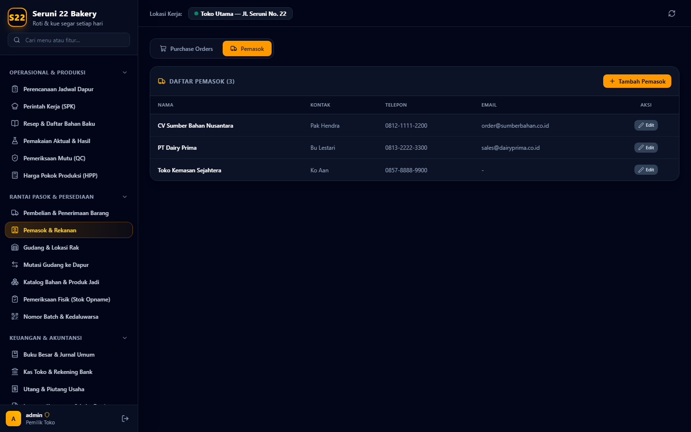
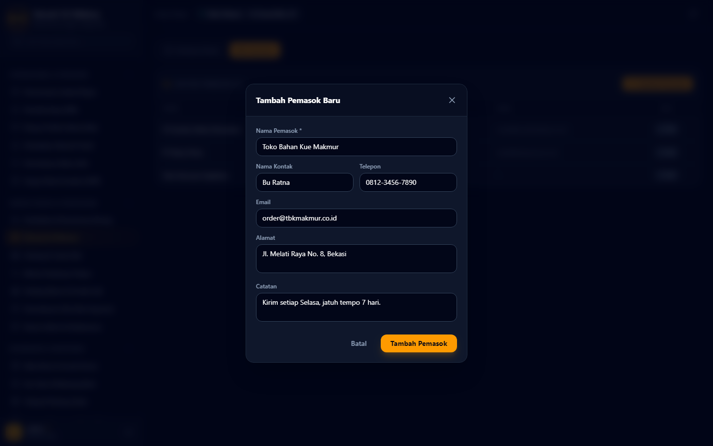
| Label di layar | Isi contoh |
|---|---|
| Nama Pemasok * | Toko Bahan Kue Makmur |
| Nama Kontak | Bu Ratna |
| Telepon | 0812-3456-7890 |
| order@tbkmakmur.co.id | |
| Alamat | Jl. Melati Raya No. 8, Bekasi |
| Catatan | Kirim setiap Selasa, jatuh tempo 7 hari. |
| tombol penyimpanan | Tambah Pemasok (sama dengan tombol pembuka formulir) |
Hanya Nama Pemasok * yang wajib; lima kolom lainnya boleh kosong. Judul formulirnya Tambah Pemasok Baru, sedangkan tombol menyimpannya bertuliskan Tambah Pemasok — ketika formulir dibuka dari tombol Edit, judulnya berubah menjadi Edit Pemasok dan tombolnya menjadi Simpan Perubahan.
Pemasok di atas hanya contoh isian dan tidak ikut tersimpan. Yang ada di data contoh ada tiga, dan kolomnya persis seperti tabel daftar: CV Sumber Bahan Nusantara (kontak Pak Hendra, 0812-1111-2200), PT Dairy Prima (Bu Lestari), dan Toko Kemasan Sejahtera (Ko Aan). Dua yang pertama sudah dipakai PO pada Bab 18; yang ketiga dipakai untuk pesanan kemasan.
Untuk mengubah data, tekan Edit pada baris pemasok, perbaiki isian, lalu tekan Simpan Perubahan. Daftar menampilkan kolom Nama, Kontak, Telepon, Email, dan Aksi.
Nama pemasok yang sudah dipakai PO tidak berubah pada dokumen lama walaupun Anda memperbaiki ejaannya. Perubahan berlaku untuk dokumen dan tampilan berikutnya. Bila penamaan ditolak, form pemasok tetap terbuka dengan pesan alasannya di dalam form (umumnya Data pemasok gagal disimpan. atau alasan dari server) — lihat Bab 2.6.
Simpan nomor telepon dan nama kontak yang benar-benar dihubungi saat barang terlambat. Informasi ini juga membantu saat memeriksa utang per pemasok di Bab 27.
Layar ini menunjukkan stok bahan per lokasi penyimpanan: gudang, dapur, dan etalase. Angka diambil dari pencatatan stok per lokasi, bukan dari perkiraan.
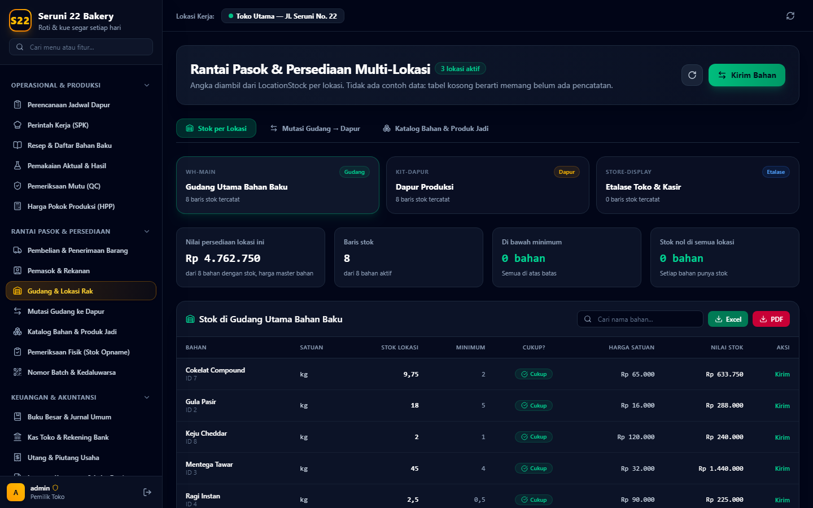
Tabel memuat kolom Bahan, Satuan, Stok lokasi, Minimum, Cukup?, Harga satuan, Nilai stok, dan Aksi. Tanda Kurang berarti stok di bawah minimum; Cukup berarti sebaliknya.
Bila layar menampilkan peringatan bahwa belum ada lokasi aktif, stok tidak dapat ditampilkan. Hubungi pemilik atau pengembang untuk memastikan lokasi penyimpanan sudah dibuat di basis data.
Periksa kolom Cukup? sebelum memulai produksi. Bahan yang berstatus Kurang sebaiknya dimutasi atau dibeli lebih dahulu agar SPK tidak terhenti.
Mutasi memindahkan bahan dari satu lokasi ke lokasi lain, biasanya dari gudang utama ke dapur produksi. Setiap pengiriman menulis dua kaki mutasi dalam satu transaksi sehingga stok asal dan tujuan selalu seimbang.
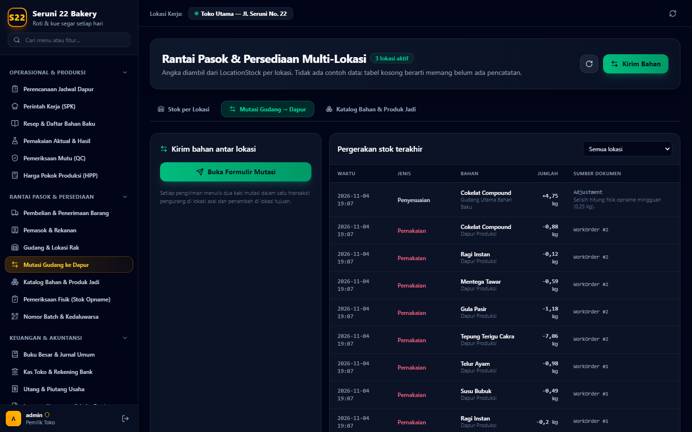
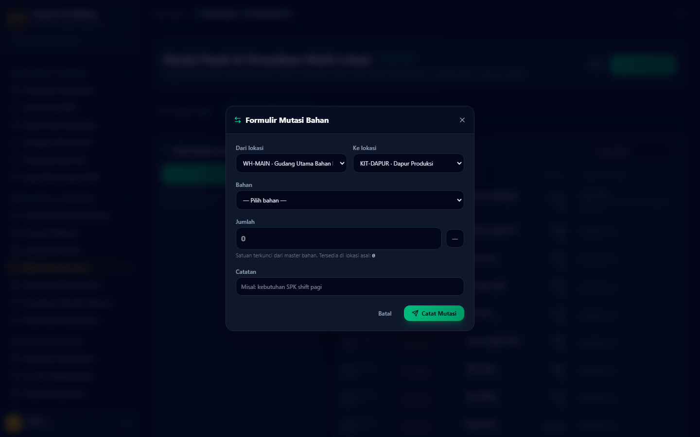
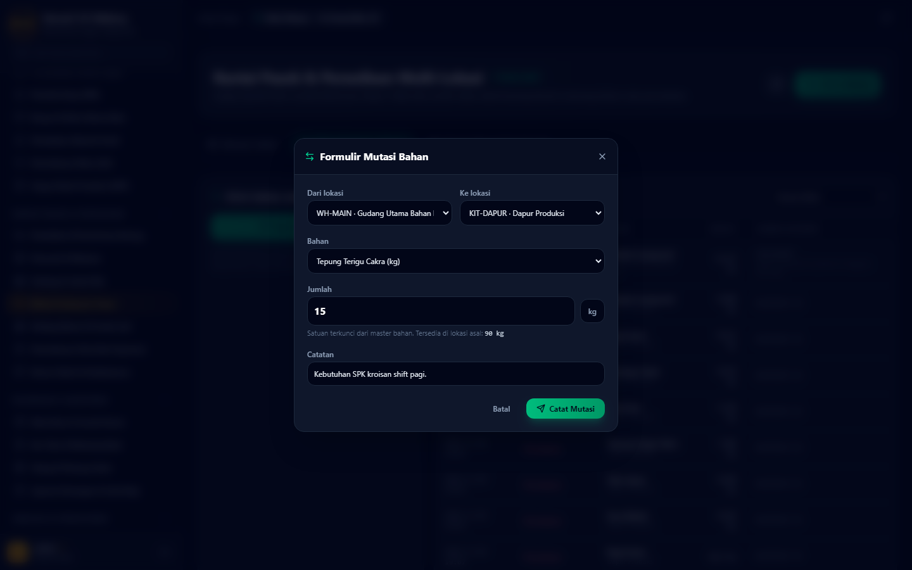
| Label di layar | Isi contoh |
|---|---|
| Dari lokasi | WH-MAIN · Gudang Utama Bahan Baku |
| Ke lokasi | KIT-DAPUR · Dapur Produksi |
| Bahan | Tepung Terigu Cakra (kg) |
| Jumlah | 15, dengan gembok satuan kg di sebelah kanan kolom |
| teks bantu di bawah Jumlah | Satuan terkunci dari master bahan. Tersedia di lokasi asal: 90 kg |
| Catatan | Kebutuhan SPK kroisan shift pagi. |
| tombol penyimpanan | Catat Mutasi |
Angka 90 kg pada teks bantu adalah stok gudang saat formulir dibuka, jadi jumlah yang boleh dikirim tidak lebih dari itu. Nama opsi lokasi selalu diawali kode lokasi (WH-MAIN, KIT-DAPUR, STORE-DISPLAY) lalu nama lokasinya.
Isian di atas hanya contoh dan tidak disimpan. Pada data contoh, perpindahan gudang ke dapur sudah tercatat 16 baris Transfer antarlokasi. Contoh yang tersimpan: 5 kg Cokelat Compound dengan catatan Persiapan produksi pagi — keluar dari Gudang Utama Bahan Baku (10 kg → 5 kg) dan masuk Dapur Produksi pada saat yang sama. Karena mutasi hanya memindahkan barang, nilai persediaannya ikut pindah antar akun lokasi — dari 1-003 Persediaan Bahan Baku (Gudang) ke 1-004 Persediaan Dapur — tanpa mengubah total persediaan toko.
Bagian Pergerakan stok terakhir menampilkan kolom Waktu, Jenis, Bahan, Jumlah, dan Sumber dokumen. Gunakan filter Semua lokasi untuk mempersempit tampilan. Jumlah yang keluar dari gudang dan masuk ke dapur tercatat sebagai satu dokumen mutasi.
Jumlah tidak boleh melebihi stok di lokasi asal. Lokasi asal dan tujuan juga harus berbeda. Bila muncul pesan Jumlah melebihi stok tersedia di lokasi asal, periksa stok terbaru di Bab 20 atau catat penerimaan barang lebih dahulu.
Mutasi bukan pengeluaran biaya; ia hanya memindahkan barang. Nilai persediaan ikut berpindah antarakun lokasi melalui jurnal otomatis sehingga total persediaan toko tidak berubah karena mutasi.
Kirim bahan untuk satu SPK sekaligus dan tulis nomor SPK pada Catatan. Dengan begitu, sisa bahan di dapur mudah ditelusuri bila produksi selesai dengan pemakaian berbeda.
Katalog memuat dua daftar acuan: bahan baku beserta harga satuannya, dan produk jadi beserta harga jual serta stoknya per lokasi. Layar ini dipakai untuk memeriksa harga dan ketersediaan sebelum menjual atau memproduksi. Ini adalah layar yang diisi paling awal — bahan di sinilah yang kelak muncul sebagai pilihan — Bahan — pada baris PO (Bab 18.1) dan sebagai objek perhitungan resep (Bab 14).
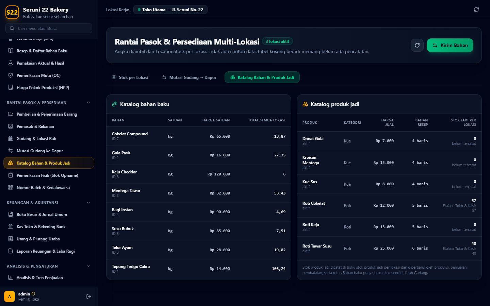
Tabel Katalog bahan baku memuat kolom Bahan, Satuan, Harga satuan, dan Total semua lokasi. Gunakan untuk memeriksa harga acuan sebelum membuat PO atau menghitung HPP.
Tabel Katalog produk jadi memuat kolom Produk, Kategori, Harga jual, Bahan resep, dan Stok jadi per lokasi. Stok jadi menunjukkan jumlah produk siap jual di setiap lokasi, termasuk etalase.
Bila stok produk jadi kosong, periksa apakah SPK untuk produk tersebut sudah diselesaikan (Bab 13). Menyelesaikan SPK menambahkan jumlah roti bagus ke etalase.
Katalog bersifat acuan. Mengubah harga atau produk dilakukan lewat Resep & Daftar Bahan Baku (Bab 14), bukan di layar ini.
Sebelum menerima pesanan besar, periksa stok jadi per lokasi. Bila belum cukup, buat SPK dan pastikan bahan tersedia agar janji pengambilan tidak terlewat.
Opname membandingkan saldo sistem dengan jumlah fisik di rak. Selisih disetel sebagai penyesuaian dan tercatat di jejak audit, sehingga stok sistem kembali sesuai kenyataan.
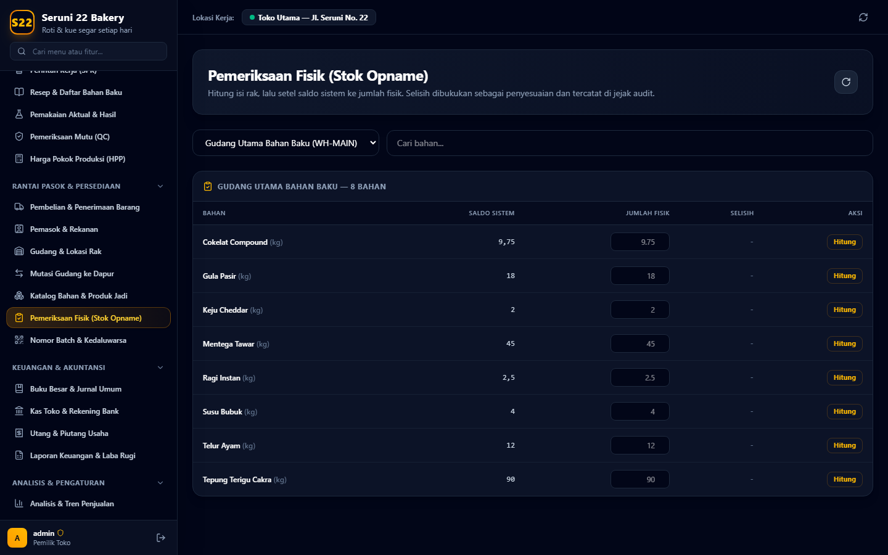
Setelah disetel, layar menampilkan pesan bahwa stok bahan telah disetel ke jumlah baru. Nilai persediaan dan jurnal penyesuaian ikut diperbarui.
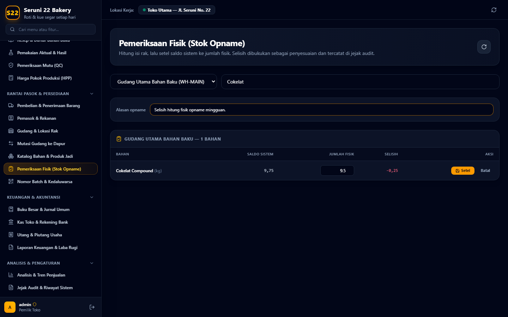
Cokelat, Jumlah fisik 9,5 sehingga Selisih −0,25 kg, dan Alasan opname sudah terisi.| Label di layar | Isi contoh |
|---|---|
| dropdown lokasi | Gudang Utama Bahan Baku (WH-MAIN) |
| kotak Cari bahan... | Cokelat — tabel menyusut menjadi satu baris |
| judul grup | GUDANG UTAMA BAHAN BAKU — 1 BAHAN |
| Alasan opname | Selisih hitung fisik opname mingguan. |
| baris Bahan | Cokelat Compound (kg) |
| Saldo sistem | 9,75 |
| Jumlah fisik | 9,5 |
| Selisih | −0,25 (merah) |
| Aksi | Setel dan Batal |
Kolom Alasan opname baru muncul setelah ada minimal satu baris dengan Selisih bukan nol, jadi kotak isian itu memang tidak terlihat pada layar opname yang masih kosong. Kolom Jumlah fisik boleh dikosongkan; yang dihitung hanyalah baris yang diisi.
Penyetelan pada gambar tidak disimpan. Yang benar-benar tercatat di data contoh adalah opname cokelat satu tahap lebih awal: saldo sistem 5 kg disetel ke jumlah fisik 9,75 kg sehingga Selisih +4,75 kg. Aksi itu menulis mutasi Penyesuaian 4,75 kg di gudang dan jurnal StokAdjustment dengan keterangan "Stok opname Cokelat Compound (kg) (+4.75): Selisih hitung fisik opname mingguan (0,25 kg)." — bagian dalam tanda kutip kedua adalah teks alasan yang diketik operator, jadi tulisan "0,25 kg" di sana tidak sama dengan selisih yang dihitung sistem. Jurnalnya mendebit 1-003 Persediaan Bahan Baku (Gudang) dan mengkredit 5-006 Beban Selisih Persediaan sebesar Rp 308.750 (4,75 kg × Rp 65.000).
Penyetelan stok mengubah saldo dan menulis jurnal. Lakukan hanya setelah barang benar-benar dihitung, bukan untuk menutupi selisih yang belum dijelaskan. Hanya Kepala Dapur, Manajer Operasional, dan Pemilik Toko yang dapat menyetel stok.
Opname per lokasi. Bila barang yang sama disimpan di gudang dan dapur, hitung dan setel masing-masing lokasi agar tidak terjadi pemindahan stok yang tidak nyata.
Sejak 1.2.13, setiap baris bahan memegang pengirimannya sendiri. Artinya Anda boleh menekan Setel pada baris gula, lalu pada baris tepung, tanpa yang kedua ditolak sebagai pengulangan. Sebelumnya kedua penyetelan itu memakai tanda yang sama sehingga server mengiranya satu niat ganda dan menolak yang kedua. Bila muncul pesan Koreksi stok gagal disimpan., perbaiki jumlah pada baris itu — baris lain yang sudah tersimpan tidak ikut berubah.
Lakukan opname pada saat toko sepi dan produksi belum dimulai. Catat tanggal dan alasan dengan jelas agar selisih mudah ditelusuri di kemudian hari.
Setiap lot bahan dapat memiliki nomor batch dan tanggal kedaluwarsa. Layar ini membantu memakai bahan yang paling cepat kedaluwarsa dan mengeluarkan lot yang sudah lewat.
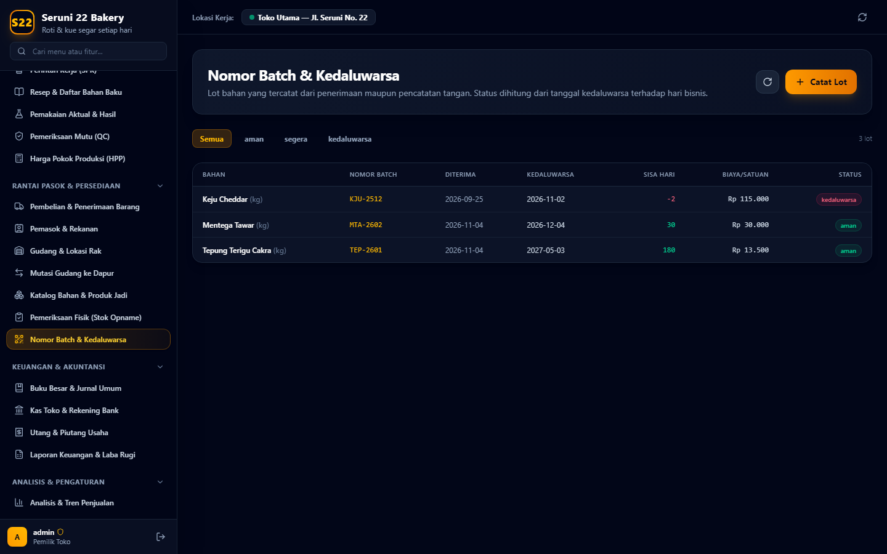
Gunakan filter Semua, aman, segera, atau kedaluwarsa.
| Status | Arti |
|---|---|
| aman | Tanggal kedaluwarsa masih jauh dari hari bisnis. |
| segera | Lot mendekati kedaluwarsa dan perlu dipakai lebih dahulu. |
| kedaluwarsa | Tanggal kedaluwarsa sudah lewat; jangan dipakai untuk produksi. |
Kolom yang tersedia: Bahan, Nomor Batch, Diterima, Kedaluwarsa, Sisa hari, Biaya, satuan, dan Status. Sisa hari bernilai negatif bila lot sudah kedaluwarsa.
GUL-2026-10-A.Pencatatan manual dipakai untuk bahan yang dibeli tunai lalu dikemas sendiri, di luar struk penerimaan. Lot dari penerimaan barang tercatat otomatis saat Bab 18 disimpan.
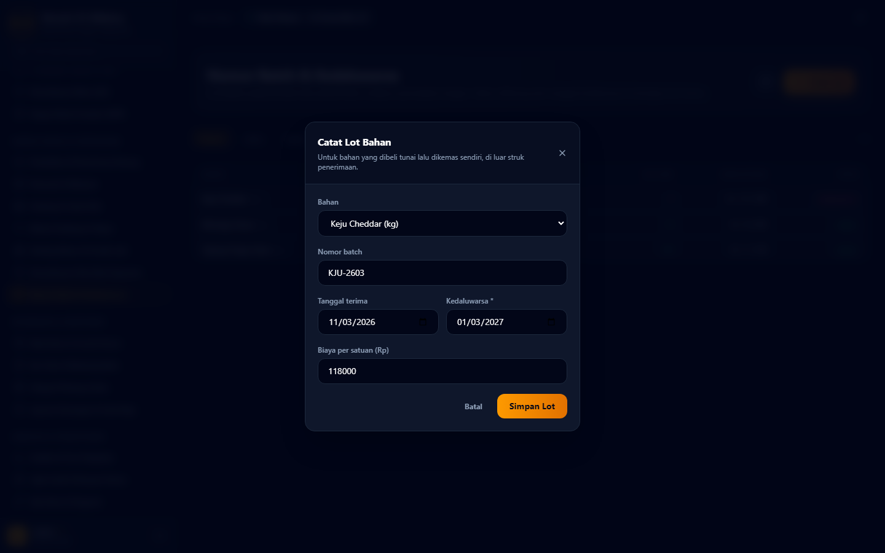
| Label di layar | Isi contoh |
|---|---|
| Bahan | Keju Cheddar (kg) |
| Nomor batch | KJU-2603 |
| Tanggal terima | 2026-11-03 (ditampilkan 11/03/2026) |
| Kedaluwarsa * | 2027-01-03 (ditampilkan 01/03/2027) |
| Biaya per satuan (Rp) | 118000 — rupiah penuh, bukan unit minor |
| tombol penyimpanan | Simpan Lot |
Hanya Kedaluwarsa * yang wajib bertanda bintang; nomor batch boleh dikosongkan bila kemasan tidak memuatnya. Teks di bawah judul formulir mengingatkan gunanya: "Untuk bahan yang dibeli tunai lalu dikemas sendiri, di luar struk penerimaan."
Lot pada gambar tidak disimpan. Tiga lot yang tercatat di data contoh berasal dari jalur berbeda, dan statusnya sekaligus memperlihatkan cara baca kolom Sisa hari:
| Nomor Batch | Bahan | Diterima | Kedaluwarsa | Sisa hari | Status |
|---|---|---|---|---|---|
| TEP-2601 | Tepung Terigu Cakra | 2026-11-04 | 2027-05-03 | 180 | aman |
| MTA-2602 | Mentega Tawar | 2026-11-04 | 2026-12-04 | 30 | aman |
| KJU-2512 | Keju Cheddar | 2026-09-25 | 2026-11-02 | −2 | kedaluwarsa |
Dua lot pertama lahir otomatis dari penerimaan PO-20261104-0001 dan PO-20261104-0002, lengkap dengan biaya per satuan yang dipakai di PO (Rp 13.500 dan Rp 30.000). Yang ketiga adalah lot keju lama yang sengaja dibiarkan lewat tanggal agar tombol filter kedaluwarsa punya isi.
Jangan memakai lot berstatus kedaluwarsa untuk produksi. Periksa lot segera pada awal shift dan pakai lebih dahulu. Lot yang sudah kedaluwarsa tetap terlihat di riwayat sebagai bukti, bukan dihapus.
Tulis nomor batch pada kemasan asli saat barang diterima. Dengan begitu, penelusuran bahan yang bermasalah dapat dilakukan tanpa membongkar seluruh gudang.
Semua transaksi operasional menulis jurnal secara otomatis. Layar ini menampilkan kaki jurnal pada rentang tanggal tertentu, sehingga Anda dapat menelusuri asal angka di laporan keuangan.
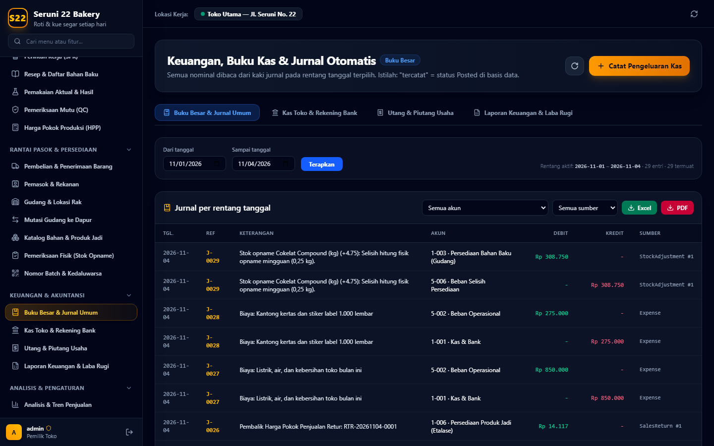
Tabel Jurnal per rentang tanggal memuat kolom Tgl., Ref, Keterangan, Akun, Debit, Kredit, dan Sumber. Di bagian bawah terlihat penanda seimbang atau SELISIH sebagai pemeriksaan cepat keseimbangan debit dan kredit.
| Transaksi | Jurnal yang ditulis |
|---|---|
| Pesanan dan uang muka | Pendapatan, uang muka pelanggan, dan kas/bank |
| Pelunasan piutang | Kas/bank dan pengurangan piutang |
| Penerimaan barang | Persediaan gudang atau dapur dan utang pemasok |
| Penyelesaian SPK | Pemakaian bahan, tenaga kerja, overhead, dan produk jadi |
| Mutasi dan opname | Perpindahan nilai antarlokasi dan penyesuaian selisih |
| Retur penjualan | Pengurangan pendapatan, kas/bank, dan pengembalian stok |
| Pengeluaran kas | Beban terkait dan pengurangan kas |
Istilah tercatat pada layar keuangan berarti jurnal berstatus Posted di basis data. Layar ini tidak menyediakan formulir jurnal manual; koreksi dilakukan dengan memperbaiki transaksi sumbernya atau mencatat pengeluaran yang sesuai.
Bila angka laporan terasa janggal, telusuri dulu jurnal pada tanggal terkait dengan filter sumber. Kolom Sumber menunjukkan dokumen asal sehingga Anda dapat kembali ke pesanan, SPK, atau penerimaan yang membentuk angka tersebut.
Layar ini menunjukkan saldo kas dan bank, uang masuk dan keluar pada hari bisnis, serta buku kas berjalan. Dari sini pengeluaran tunai toko dicatat.
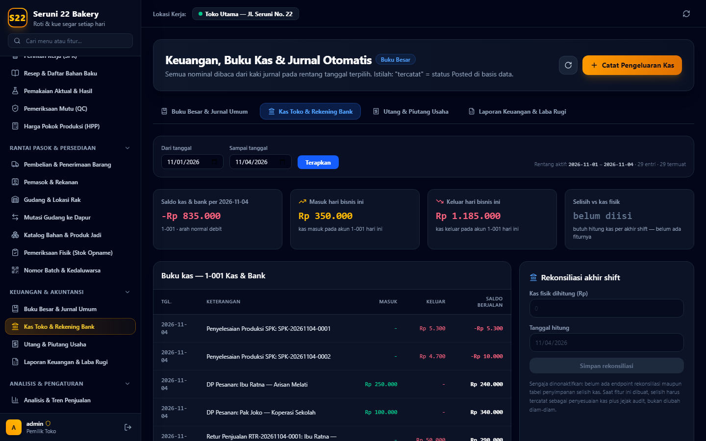
Empat kartu menunjukkan Saldo kas & bank per {tanggal}, Masuk hari bisnis ini, Keluar hari bisnis ini, dan Selisih vs kas fisik. Tabel buku kas memuat Tgl., Keterangan, Masuk, Keluar, dan Saldo berjalan.
Keterangan di dialog menunjukkan akun beban yang akan didebit dan bahwa kas dikredit dari akun 1-001 Kas & Bank.
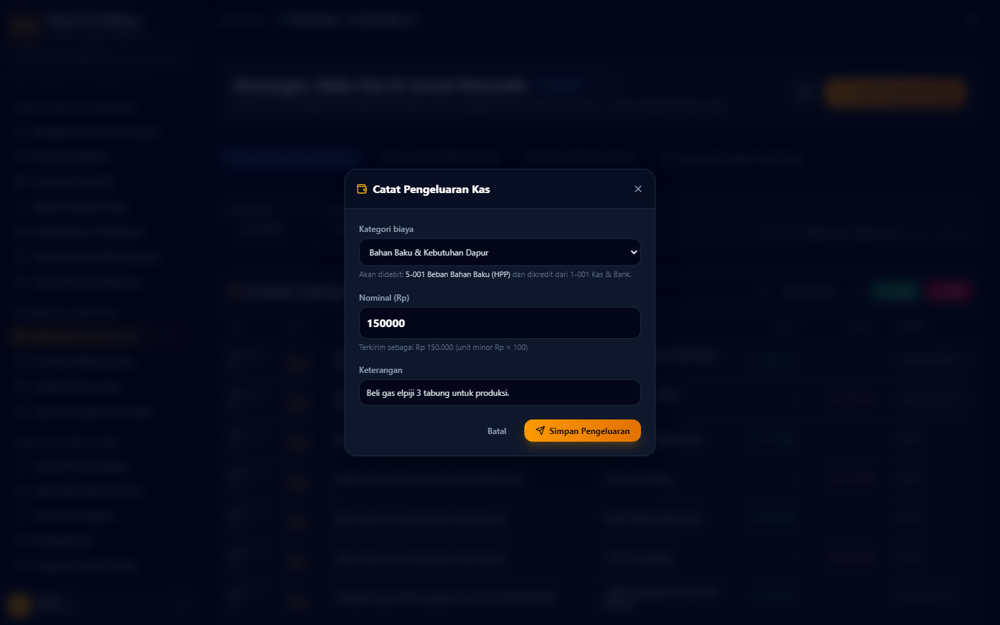
| Label di layar | Isi contoh |
|---|---|
| Kategori biaya | Bahan Baku & Kebutuhan Dapur |
| teks bantu di bawah kategori | Akan didebit: 5-001 Beban Bahan Baku (HPP) dan dikredit dari 1-001 Kas & Bank. |
| Nominal (Rp) | 150000 |
| teks bantu di bawah nominal | Terkirim sebagai Rp 150.000 (unit minor Rp × 100) |
| Keterangan | Beli gas elpiji 3 tabung untuk produksi. |
| tombol penyimpanan | Simpan Pengeluaran |
Kategori menentukan akun beban yang didebit, dan hanya tiga pilihan yang benar-benar
dibedakan server: Bahan Baku & Kebutuhan Dapur → 5-001 Beban Bahan Baku
(HPP), Gaji & Upah Karyawan → 5-003 Beban Gaji, dan Biaya
Operasional Lain → 5-002 Beban Operasional. Kolom Nominal (Rp)
menerima rupiah penuh; teks bantu mengonfirmasinya sebelum disimpan, jadi
150000 berarti Rp 150.000, bukan Rp 1.500.000.
Pengeluaran gas pada gambar tidak disimpan. Dua pengeluaran yang tersimpan di data contoh keduanya memakai Biaya Operasional Lain: "Biaya: Listrik, air, dan kebersihan toko bulan ini" Rp 850.000 dan "Biaya: Kantong kertas dan stiker label 1.000 lembar" Rp 275.000. Masing-masing menulis dua baris jurnal — debit 5-002 Beban Operasional, kredit 1-001 Kas & Bank — sehingga total saldo 5-002 menjadi Rp 1.125.000 dan saldo kas menanggung keduanya.
Bagian Rekonsiliasi akhir shift masih dinonaktifkan pada versi 1.2.13 karena belum tersedia jalur penyimpanan rekonsiliasi. Jangan mengandalkan kolom Selisih vs kas fisik untuk menutup shift. Hitung kas secara manual dan catat selisih yang perlu disesuaikan melalui prosedur toko.
Pengeluaran kas mengurangi saldo dan laba. Pastikan kategori dan keterangannya benar sebelum menyimpan karena koreksi dilakukan lewat jurnal, bukan dengan menghapus baris dari layar ini.
Catat pengeluaran kecil pada hari yang sama. Menumpuk banyak pengeluaran di akhir bulan membuat arus kas harian tidak mencerminkan keadaan sebenarnya.
Layar ini merangkum piutang pelanggan dan utang kepada pemasok dari dokumen yang sudah tercatat. Gunakan untuk melihat siapa yang masih harus membayar dan kepada siapa toko masih berutang.
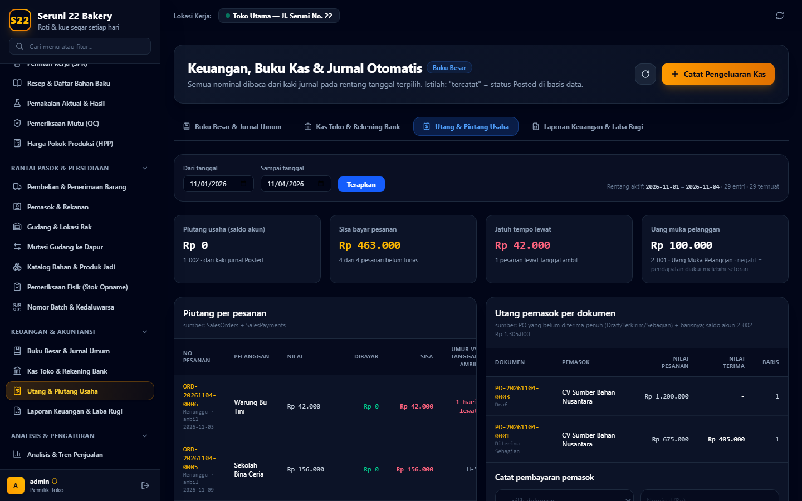
Kartu ringkasan menunjukkan Piutang usaha (saldo akun), Sisa bayar pesanan, Jatuh tempo lewat, dan Uang muka pelanggan. Tabel Piutang per pesanan memuat No. pesanan, Pelanggan, Nilai, Dibayar, Sisa, dan Umur vs tanggal ambil.
Untuk menerima pembayaran, buka Piutang & Pembayaran (Bab 10). Layar ini hanya menampilkan ringkasan.
Tabel Utang pemasok per dokumen memuat Dokumen, Pemasok, Nilai pesanan, Nilai terima, dan Baris. Nilainya berasal dari penerimaan barang yang sudah dicatat pada Bab 18.
Toko dengan banyak pesanan berjalan tidak lagi memuat seluruh daftar sekaligus. Sejak 1.2.13 layar ini menampilkan berapa baris yang sedang tampil dan menawarkan dua macam tombol yang berbeda fungsinya:
| Yang tampil di layar | Artinya |
|---|---|
| {n} dari {total} pesanan belum lunas pada kartu Sisa bayar pesanan, kadang disusul · muat lagi untuk sisanya | Sebagian pesanan belum ditarik dari server. Nominal rupiah pada kartu ini diambil dari angka agregat server, jadi tidak berubah saat daftar dilengkapi; hanya jumlah baris yang terpotong. |
| · hanya baris yang termuat pada kartu Jatuh tempo lewat | Perhitungan umur hanya melihat baris yang sudah ada di layar. Lengkapi daftar lebih dulu sebelum menyimpulkan jumlah yang lewat tanggal ambil. |
| Tampilkan 100 baris berikutnya ({n} tersisa) atau Tampilkan 100 dokumen berikutnya ({n} tersisa) | Barisnya sudah ada di komputer ini; tombol ini hanya menampilkan lebih banyak. Cepat dan tidak menghubungi server. Daftar tampil 50 baris pertama. |
| Muat {n} pesanan lagi atau Muat {n} dokumen lagi | Menarik halaman berikutnya dari server. Selama proses berjalan, tombol berubah menjadi Memuat... dan tidak dapat ditekan. |
Muat awal layar ini membawa sampai 500 pesanan belum lunas dan 300 dokumen pembelian terbuka. Urutan yang benar saat daftar masih terpotong: tekan Tampilkan 100 baris berikutnya sampai habis, baru Muat … lagi.
Penanda hanya baris yang termuat bukan kerusakan dan bukan angka yang salah: itu cara aplikasi mengakui bahwa hitungannya belum menyeluruh. Tekan tombol muat sampai penanda itu hilang sebelum memakai angka layar ini untuk menagih atau merekap.
Tombol Catat pembayaran pemasok masih dinonaktifkan pada versi 1.2.13 karena belum ada jalur penyimpanan pembayaran pemasok. Catat pembayaran di luar aplikasi sesuai prosedur toko dan simpan buktinya; jangan mengubah data penerimaan untuk menandai utang sudah dibayar.
Umur piutang dihitung terhadap tanggal ambil pesanan, bukan tanggal nota. Piutang yang melewati tanggal ambil perlu ditagih lebih dahulu.
Periksa layar ini setiap akhir minggu bersama buku kas. Selisih antara uang yang sudah masuk dan sisa tagihan biasanya menunjukkan piutang yang perlu ditagih atau pembayaran yang belum dicatat.
Laporan membaca jurnal pada rentang tanggal yang dipilih. Layar ini menampilkan laba rugi per akun dan neraca saldo, serta menyediakan ekspor Excel dan PDF.
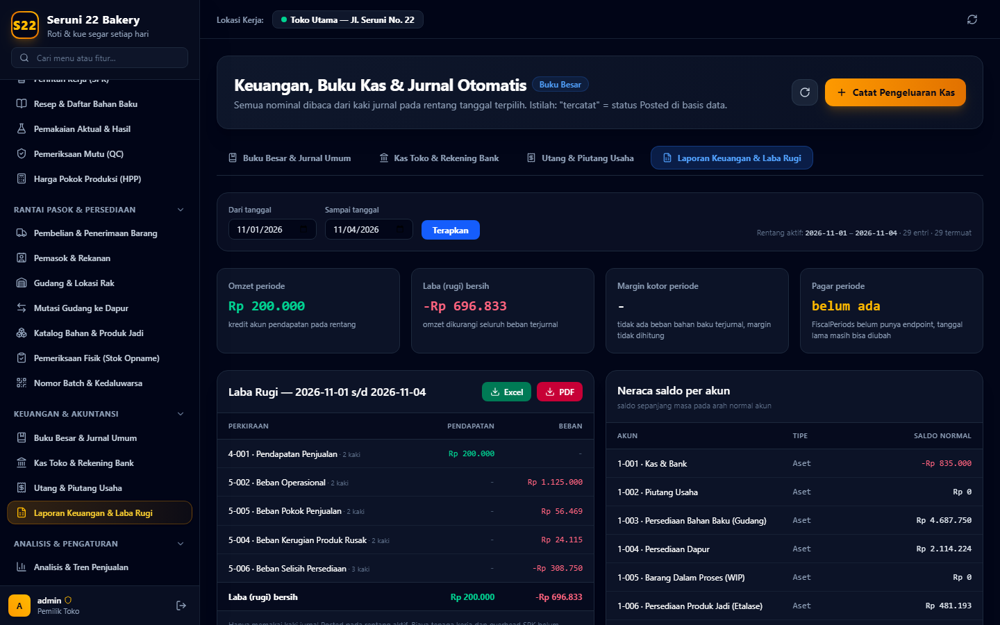
| Kartu | Arti |
|---|---|
| Omzet periode | Kredit akun pendapatan pada rentang yang dipilih. |
| Laba (rugi) bersih | Pendapatan dikurangi seluruh beban pada rentang tersebut. |
| Margin kotor periode | Dihitung bila beban pokok penjualan tersedia. Bila belum, ditandai tidak ada. |
| Pagar periode | Penanda penguncian periode fiskal. Nilai belum ada berarti penguncian belum diaktifkan pada versi ini. |
Tabel Laba Rugi memuat Perkiraan, Pendapatan, dan Beban dengan baris Laba (rugi) bersih di bagian bawah. Tabel Neraca saldo per akun memuat Akun, Tipe, dan Saldo normal.
Laporan tidak memakai angka ketikan terpisah; semua nilai dibaca dari jurnal. Bila ada transaksi yang belum tercatat, angkanya belum akan muncul. Periksa kembali pesanan, penerimaan, SPK, dan pengeluaran pada periode tersebut.
Bandingkan laporan bulan ini dengan bulan sebelumnya pada tanggal yang sama, bukan dengan bulan penuh. Perbandingan yang setara lebih membantu daripada angka besar yang belum selesai dihitung.
Layar ini merangkum pendapatan, beban, jumlah pesanan, produk terlaris, dan beban per akun pada rentang tertentu. Angka pendapatan dan beban berasal dari jurnal, sedangkan jumlah pesanan berasal dari daftar penjualan.
Enam kartu menunjukkan Pendapatan, Beban, Selisih Pendapatan − Beban, Rasio Selisih, Pesanan, dan Rata-rata Pesanan. Rentang yang dipakai ditulis di bawah judul layar; secara bawaan layar memuat rentang 90 hari terakhir.
Selisih Pendapatan − Beban bukan laba kotor akuntansi. Nilai ini dihitung dari seluruh pendapatan jurnal dikurangi beban pada rentang yang sama, sehingga bisa berbeda dari laba rugi pada Bab 28 yang memakai pengelompokan akun lebih lengkap.
Gunakan produk terlaris untuk merencanakan SPK berikutnya, lalu cocokkan dengan stok bahan di Bab 20. Produk yang laris tetapi bahannya menipis perlu diprioritaskan pembeliannya.
Setiap aksi tulis yang berhasil dicatat: siapa pelakunya, kapan terjadi, dan nilai apa yang berubah. Percobaan yang ditolak karena peran tidak berwenang juga tercatat.
Nilai sebelum dan sesudah perubahan ditampilkan sebagai lama: dan baru:. Bila rincian nilai tidak disimpan per baris, layar menulis nilai tidak disimpan per baris.
Jejak audit bersifat baca-saja. Tidak ada tombol untuk mengubah atau menghapus catatan. Gunakan layar ini untuk menjawab pertanyaan seperti siapa yang membatalkan pesanan, kapan stok disetel, atau mengapa sebuah percobaan ditolak.
Saat menelusuri selisih stok, cari kata koreksi stok atau opname pada tanggal yang dicurigai. Kolom Perubahan biasanya memuat alasan yang diisi saat penyetelan.
Dari layar ini Pemilik Toko membuat akun pegawai, memberikan kata sandi sementara, mengganti peran, serta menonaktifkan akun yang tidak dipakai lagi.
Tiga kartu menunjukkan Akun terdaftar, Owner aktif, dan Wajib ganti sandi. Tabel memuat kolom Nama pengguna, Peran, Status, Login terakhir, dan Aksi. Status yang mungkin terlihat: aktif, nonaktif, wajib ganti sandi, dan terkunci.
kasir-sore.devi.kasir, sandi sementara, dan peran Staf Toko / Kasir (Pegawai).| Label di layar | Isi contoh |
|---|---|
| teks di bawah judul | Akun baru lahir dengan sandi sementara yang wajib diganti sendiri. |
| Nama pengguna | devi.kasir |
| Kata sandi awal | sandi sementara 13 karakter, huruf dan angka — jangan memakai sandi yang dipakai di tempat lain |
| Peran | Staf Toko / Kasir (Pegawai) |
| teks bantu di bawah Peran | Pesanan dan pembayaran; tidak bisa membatalkan atau membuka buku besar. |
| tombol penyimpanan | Simpan Pegawai |
Akun devi.kasir pada gambar tidak disimpan. Empat akun yang ada di data
contoh memperlihatkan isi kolom Nama pengguna, Peran, dan status wajib ganti
sandi: admin sebagai Pemilik Toko (Owner) (sudah pernah masuk),
rani.admin sebagai Manajer Operasional (Admin), budi.dapur
sebagai Kepala Dapur (Dapur), dan sari.kasir sebagai Staf Toko /
Kasir (Pegawai). Hanya admin yang sudah menyelesaikan ganti sandi; tiga
akun lainnya masih berstatus wajib ganti sandi, sehingga login berikutnya diarahkan ke
layar ganti sandi lebih dahulu (Bab 2.3).
Peran menentukan menu yang bisa dibuka. Kasir hanya melihat menu penjualan dan pembayarannya; bila menu produksi atau keuangan tidak muncul untuk seorang pegawai, itu bukan kesalahan instalasi melainkan peran yang tersimpan di akunnya.
Jangan menonaktifkan seluruh akun Pemilik Toko. Pastikan selalu ada akun Owner aktif yang dapat membuka pengaturan dan membuat akun lain. Kata sandi tidak pernah ditampilkan atau dikirim balik oleh aplikasi, jadi simpan kata sandi sementara di tempat aman dan serahkan hanya kepada pemiliknya.
Perubahan peran memengaruhi menu yang terlihat. Setelah peran diubah, minta pegawai keluar dan masuk kembali agar daftar menu serta hak aksesnya diperbarui.
Gunakan nama pengguna yang mudah dikenali, misalnya gabungan nama dan shift. Dengan begitu, Jejak Audit langsung menunjukkan siapa yang mengerjakan suatu tindakan.
Layar ini mengatur cara struk dicetak, lebar kertas, dan pengujian printer serta pemindai barcode. Driver printer dipasang lewat Windows; aplikasi hanya memilih printer dan mengirim pekerjaan cetak.
| Mode | Keterangan |
|---|---|
| Driver Windows | Memakai printer yang sudah terpasang di Windows. Driver wajib ada dan printer harus tampil di daftar. |
| ESC/POS langsung | Mengirim perintah ESC/POS ke port printer jaringan tanpa driver. Isi Alamat printer (misalnya 192.168.1.50) dan Port (bawaan 9100). |
Kolom Pemindai Barcode menerima ketikan dari pemindai mode keyboard. Pindai satu barcode; kode yang terbaca muncul di bawah kolom. Bagian Riwayat Pekerjaan Cetak menampilkan Waktu, Jenis, Pesanan, Printer, Kertas, Status, dan Keterangan dengan status Tercetak, Gagal, atau Menunggu.
Pada versi 1.2.13, jalur ESC/POS baru terbukti terhadap emulasi di mesin pengembang dan jalur driver baru diuji dengan pencetak virtual, belum pada printer kasir fisik. Pemindai juga baru diuji melalui simulasi. Uji printer, pemindai, dan kertas pada perangkat toko yang sebenarnya sebelum mengandalkannya saat jam sibuk.
Layar kasir memakai ulang hasil pemeriksaan printer sampai 15 detik lamanya (Bab 6). Menyimpan pengaturan di bab ini membuang status itu, jadi layar kasir berikutnya langsung memakai printer yang baru diatur. Pesan konfirmasi yang muncul adalah Pengaturan perangkat disimpan dan berlaku untuk sesi berikutnya.
Aplikasi belum mengirim perintah buka laci uang. Buka laci secara manual atau melalui tombol pada printer yang mendukung. Jangan mengubah pengaturan printer saat ada transaksi yang sedang dicetak.
Cetak struk uji setiap pagi sebelum toko dibuka. Bila struk uji gagal, perbaiki pengaturan lebih dahulu agar pembayaran pertama tidak tertunda.
Menu terakhir di sidebar ini mengatur identitas toko, zona waktu hari bisnis, logo, pencadangan data, dan pemeriksaan mandiri basis data. Perubahan di sini berlaku tanpa memasang ulang aplikasi.
Gambar logo diperkecil otomatis. Bila tidak ada logo, kotak merek menampilkan inisial nama toko. Perubahan nama, slogan, dan logo langsung terlihat setelah disimpan. Mata uang tetap IDR dan versi aplikasi hanya berubah lewat pemasangan pembaruan.
Kartu Cadangan & penyimpanan menampilkan ukuran Basis data + WAL, Total cadangan, Sisa disk, dan Cadangan terverifikasi terakhir. Daftar di bawahnya memuat berkas cadangan otomatis beserta ukuran dan tanda verifikasi.
Cadangan yang hanya tersimpan di PC yang sama belum melindungi dari kerusakan PC. Salin cadangan ke flash disk atau komputer lain secara berkala. Jangan menghapus, memindahkan, atau mengganti nama berkas basis data, dan jangan mencopot aplikasi dengan menghapus foldernya.
Periksa Cadangan terverifikasi terakhir setiap awal bulan. Bila tanggalnya sudah lama atau Sisa disk menipis, buat cadangan baru dan salin ke media di luar PC.
Bab ini merangkum urutan pekerjaan dari membuka toko sampai menutup hari. Gunakan sebagai daftar periksa agar tidak ada transaksi yang tertinggal di salah satu menu.
| Waktu | Tindakan | Menu |
|---|---|---|
| Pagi | Masuk dengan akun sendiri; periksa nama toko dan outlet di layar masuk. | Layar masuk (Bab 2) |
| Pagi | Baca empat indikator, peringatan, dan pesanan mendatang. | Dasbor (Bab 3) |
| Pagi | Periksa pekerjaan yang menunggu tindakan. | Kotak Tugas (Bab 4) |
| Pagi | Cetak struk uji dan pastikan printer siap. | Perangkat Kasir (Bab 32) |
| Pagi | Periksa lot yang mendekati kedaluwarsa dan stok bahan kritis. | Batch (Bab 24), Gudang (Bab 20) |
| Pagi | Tentukan produksi hari ini dan pastikan bahan sudah di dapur. | SPK (Bab 13), Mutasi (Bab 21) |
Cetak atau simpan daftar periksa ini di dekat kasir. Menandai setiap langkah yang sudah dikerjakan lebih cepat daripada mengingat-ingat menu mana yang belum dibuka.
Jangan menutup aplikasi saat ada transaksi yang sedang disimpan. Tunggu sampai pesan berhasil muncul, lalu periksa apakah data sudah tampil di daftar sebelum keluar.
Pesanan besar untuk arisan, hajatan, atau kantor biasanya melewati beberapa menu: uang muka, perencanaan produksi, pemeriksaan mutu, pelunasan, dan serah terima barang. Bab ini menunjukkan urutannya.
| Kasus | Perlakuan |
|---|---|
| Pesanan lunas di muka | DP sama dengan total. Pesanan langsung berstatus Lunas, stok etalase berkurang, dan struk dapat dicetak. |
| Pesanan dengan DP | Status DP / Sebagian. Catat pelunasan pada hari pengambilan; stok berkurang saat pesanan menjadi lunas. |
| Pesanan belum bayar | Status Belum Bayar. Pesanan masuk daftar piutang dan perlu ditagih sebelum serah terima. |
| Pesanan dibatalkan | Batalkan dengan alasan. Stok dan jurnal dikembalikan; pesanan tetap terlihat di riwayat. |
| Barang dikembalikan | Setelah pesanan lunas, catat retur dengan jumlah unit dan alasan (Bab 11). |
Satu pesanan hanya memiliki satu nota. Uang muka dan pelunasan dicatat pada nota yang sama agar sisa tagihan, jurnal, dan laporan tidak terpecah menjadi beberapa dokumen.
Jangan menyerahkan barang sebelum status pesanan Lunas kecuali ada kebijakan toko yang jelas. Pesanan yang masih memiliki sisa tagihan tetap muncul di daftar piutang dan dapat menimbulkan selisih kas.
Alur ini menghubungkan pemasok, gudang, dapur, dan laporan biaya. Setiap langkah menambah atau memindahkan stok, sehingga urutan yang benar menjaga angka persediaan dan HPP tetap masuk akal.
| Peralihan | Yang harus cocok |
|---|---|
| PO → penerimaan | Jumlah diterima tidak melebihi sisa pesanan; satuan sama; lokasi tujuan gudang atau dapur. |
| Penerimaan → stok | Stok bertambah di lokasi yang dipilih, bukan di lokasi lain. |
| Gudang → dapur | Jumlah mutasi tidak melebihi stok asal; dua lokasi berbeda. |
| SPK → etalase | Jumlah roti bagus menambah stok produk jadi; jumlah gagal tercatat dengan alasan. |
| SPK → HPP | Pemakaian aktual, tenaga kerja, dan overhead sesuai dengan yang dicatat. |
Jangan mengoreksi stok dengan mengubah angka di katalog. Gunakan Mutasi untuk memindahkan barang dan Stok Opname untuk menyetel selisih hasil hitung fisik. Kedua jalur itu menulis jejak yang dapat ditelusuri.
Bila HPP aktual melonjak, periksa urutan ini dari belakang: harga bahan terakhir, jumlah pemakaian, lalu hasil produksi. Sering kali penyebabnya adalah harga bahan yang belum diperbarui atau hasil gagal yang tinggi.
Tutup buku berarti memastikan seluruh transaksi hari atau bulan itu sudah tercatat, laporan sudah diperiksa, dan data sudah dicadangkan. Urutan berikut mencegah pekerjaan hilang saat pergantian periode.
| Frekuensi | Tindakan |
|---|---|
| Setiap hari | Cadangkan setelah tutup toko bila hari itu ada transaksi. |
| Setiap minggu | Salin cadangan terbaru ke media di luar PC dan periksa ukurannya. |
| Setiap bulan | Buat cadangan arsip, ekspor laporan, dan jalankan pemeriksaan basis data. |
Jangan menghapus cadangan lama untuk menghemat ruang. Simpan beberapa cadangan terakhir dan setidaknya satu salinan di luar PC. Cadangan yang belum pernah diuji pemulihannya belum dapat diandalkan saat keadaan darurat.
Beri nama folder salinan dengan tanggal, misalnya Seruni22-2026-11, agar
mudah menemukan cadangan saat dibutuhkan.
Data usaha adalah aset utama toko. Bab ini merangkum cara merawat basis data, membuat cadangan yang terverifikasi, dan langkah awal bila data perlu dipulihkan.
Folder cadangan dijaga agar tidak tumbuh tanpa batas. Secara bawaan aplikasi menyimpan
semua cadangan berusia sampai 7 hari, satu cadangan untuk setiap hari selama
14 hari, satu per minggu selama 8 minggu, dan satu per bulan selama
12 bulan, dengan pagar tidak pernah kurang dari 3 salinan. Kelima angka itu
dapat diubah pada pengaturan dengan kunci backup.retention.*.
Yang berubah pada 1.2.13: saat memilih cadangan yang mewakili satu hari, satu minggu, atau satu bulan, aplikasi mendahulukan salinan yang sudah lolos verifikasi. Sebelumnya, berkas yang kebetulan paling baru bisa memakai jatah periode padahal isinya rusak, sementara salinan sehat yang lebih tua justru ikut terhapus. Selain itu:
retention.log di folder cadangan. Tidak ada penghapusan diam-diam.Pembersihan otomatis hanya berlaku di folder cadangan aplikasi. Itu bukan pengganti salinan di luar PC: bila PC rusak bersama folder cadangnya, tidak ada retensi yang bisa menolong. Lihat Bab 38.3 dan Bab 37.3.
Jangan mencopot aplikasi untuk memperbaiki masalah data, dan jangan menghapus folder data pengguna. Pencopotan aplikasi tidak menghapus data usaha, tetapi menghapus folder data secara manual akan menghilangkan seluruh riwayat toko.
Pemulihan penuh memerlukan langkah teknis di luar layar aplikasi. Ikuti panduan pemulihan yang disertakan bersama paket atau minta pendampingan. Bila tidak yakin, berhenti dan simpan salinan semua berkas sebelum melakukan tindakan apa pun.
Uji pemulihan pada komputer lain secara berkala, bukan saat keadaan darurat. Uji ini memastikan cadangan benar-benar dapat dibuka dan dipakai.
Bab ini menyebutkan hal yang belum tersedia atau belum diuji pada versi ini. Tujuannya agar Anda tidak mengandalkan fitur yang belum siap saat toko sedang beroperasi.
| Hal | Keadaan pada 1.2.13 | Yang dapat dilakukan |
|---|---|---|
| Tanda tangan aplikasi | Paket pemasangan belum ditandatangani Authenticode. | Windows dapat menampilkan peringatan. Pastikan berkas berasal dari sumber resmi dan periksa versinya. |
| Windows 10 | Uji pasang, peningkatan, dan pencopotan versi ini dijalankan pada Windows 11. Windows 10 belum diuji. | Uji pemasangan dan satu transaksi percobaan pada PC toko sebelum dipakai untuk penjualan nyata. |
| Printer thermal fisik | Jalur driver diuji dengan pencetak virtual; jalur ESC/POS diuji dengan emulasi, belum pada printer fisik. | Uji Cetak Struk Uji pada printer toko sebelum jam sibuk. |
| Pemindai barcode | Diuji melalui simulasi mode keyboard, belum pada perangkat fisik. | Uji kolom Pemindai Barcode di Perangkat Kasir dengan pemindai toko. |
| Laci uang | Aplikasi belum mengirim perintah buka laci. | Buka laci secara manual atau lewat tombol printer yang mendukung. |
| QRIS dan Kartu Debit | Pilihan tampil di layar, tetapi server menolak; hanya Tunai dan Transfer yang diterima. | Pilih Transfer Bank dan tulis keterangan di Catatan, atau gunakan Tunai. |
| Rekonsiliasi kas | Bagian rekonsiliasi akhir shift masih dinonaktifkan. | Hitung kas secara manual dan catat selisih sesuai prosedur toko. |
| Pembayaran pemasok | Tombol Catat pembayaran pemasok masih dinonaktifkan. | Catat pembayaran di luar aplikasi dan simpan buktinya; jangan mengubah penerimaan. |
| Beberapa PC sekaligus | Data tersimpan di PC tempat aplikasi dipasang; tidak ada sinkronisasi otomatis ke PC lain. | Gunakan satu PC kasir utama. Untuk kebutuhan beberapa PC, konsultasikan dengan pengembang. |
| Akses dari PC lain | Sejak 1.2.13 server lokal hanya menjawab dari PC itu sendiri. Alamat dengar lain ditolak saat aplikasi dijalankan, dengan pesan Alamat dengar "…" ditolak: aplikasi ini hanya untuk PC ini. Membuka jaringan toko memerlukan nilai SERUNI_ALLOW_LAN=1 yang sengaja dipasang, dan jalur itu belum diuji untuk pemakaian bersama. |
Anggap aplikasi hanya dipakai di satu PC. Jangan memasang SERUNI_ALLOW_LAN tanpa pendampingan pengembang. |
| Peningkatan dari versi lama | Jalur peningkatan yang diuji untuk paket ini adalah 1.2.12 → 1.2.13. Lompatan langsung dari 1.2.9 atau 1.2.10 ke 1.2.13 belum diuji pada mesin uji. | Naiklah bertahap (misalnya 1.2.10 → 1.2.12 → 1.2.13) atau cadangkan basis data lebih dulu, lalu uji satu transaksi percobaan sesudah pemasangan. |
| Pemulihan data | Pemulihan memerlukan langkah teknis di luar aplikasi. | Ikuti panduan pemulihan dan minta pendampingan bila tidak yakin. |
| Zona waktu | Hanya satu zona waktu operasi yang dipakai seluruh layar. | Pilih zona waktu toko dengan benar di Pengaturan; perubahan memengaruhi hari bisnis. |
Bila kebutuhan toko bergantung pada salah satu hal di atas, jangan menganggapnya sudah berfungsi hanya karena tombolnya terlihat. Lakukan uji pada perangkat dan data toko sendiri, lalu catat hasilnya sebelum mengubah prosedur operasional.
Buku ini menjelaskan versi 1.2.13. Bila aplikasi diperbarui, periksa kembali daftar ini pada dokumentasi versi yang terpasang. Nomor versi terlihat di Pengaturan Toko & Cabang dan pada layar Perangkat Kasir.
Tiga puluh satu menu aplikasi beserta kegunaan singkat dan nomor bab pembahasannya.
| Kelompok | Menu | Kegunaan | Bab |
|---|---|---|---|
| Ruang Kerja | Dasbor & Indikator Utama | Ringkasan uang masuk, pesanan aktif, stok kritis, dan piutang | 3 |
| Kotak Tugas & Persetujuan | Pekerjaan yang menunggu tindakan dari kondisi nyata | 4 | |
| Pemberitahuan & Catatan Aktivitas | Notifikasi internal dan ringkasan harian | 5 | |
| Penjualan & Pelanggan | Kasir Penjualan Cepat | Mencatat penjualan, pesanan, DP, dan pembayaran | 6 |
| Daftar Pesanan & Penjualan | Mencari nota, mencetak struk, membatalkan pesanan | 7 | |
| Pesanan Terjadwal (Pre-Order) | Pesanan dengan jadwal ambil hari ini atau sesudahnya | 8 | |
| Data Pelanggan & Klien | Nama, kontak, poin, dan catatan pelanggan | 9 | |
| Piutang & Pembayaran | Menerima pelunasan pesanan | 10 | |
| Retur Penjualan | Mengembalikan barang dan dana pelanggan | 11 | |
| Operasional & Produksi | Perencanaan Jadwal Dapur | Antrean SPK yang belum mulai | 12 |
| Perintah Kerja (SPK) | Membuat, memproses, dan menyelesaikan produksi | 13 | |
| Resep & Daftar Bahan Baku | Mengelola produk, resep, bahan, dan harga | 14 | |
| Pemakaian Aktual & Hasil | Arsip SPK selesai dan dibatalkan | 15 | |
| Pemeriksaan Mutu (QC) | Mencatat sampel, lulus, gagal, dan catatan mutu | 16 | |
| Harga Pokok Produksi (HPP) | Membandingkan HPP standar, HPP aktual, dan margin | 17 | |
| Rantai Pasok & Persediaan | Pembelian & Penerimaan Barang | Membuat PO dan menerima barang | 18 |
| Pemasok & Rekanan | Data pemasok dan kontak | 19 | |
| Gudang & Lokasi Rak | Stok per lokasi dan nilai persediaan | 20 | |
| Mutasi Gudang ke Dapur | Memindahkan bahan antarlokasi | 21 | |
| Katalog Bahan & Produk Jadi | Harga acuan dan stok produk jadi | 22 | |
| Pemeriksaan Fisik (Stok Opname) | Menghitung dan menyetel stok fisik | 23 | |
| Nomor Batch & Kedaluwarsa | Melacak lot dan tanggal kedaluwarsa | 24 | |
| Keuangan & Akuntansi | Buku Besar & Jurnal Umum | Melihat jurnal otomatis dan sumbernya | 25 |
| Kas Toko & Rekening Bank | Saldo kas, buku kas, dan pengeluaran | 26 | |
| Utang & Piutang Usaha | Saldo piutang pelanggan dan utang pemasok | 27 | |
| Laporan Keuangan & Laba Rugi | Laba rugi, neraca saldo, dan ekspor | 28 | |
| Analisis & Pengaturan | Analisis & Tren Penjualan | Pendapatan, beban, produk terlaris | 29 |
| Jejak Audit & Riwayat Sistem | Catatan perubahan dan percobaan yang ditolak | 30 | |
| Hak Akses & Pegawai | Akun, peran, dan kata sandi sementara | 31 | |
| Perangkat Kasir | Printer, kertas, pemindai, dan uji cetak | 32 | |
| Pengaturan Toko & Cabang | Identitas, zona waktu, cadangan, periksa basis data | 33 |
Ringkasan menu yang terlihat dan tindakan yang diizinkan untuk setiap peran. Server tetap memeriksa setiap permintaan, jadi menghindari menu bukan satu-satunya pengaman.
| Kelompok menu | Pemilik Toko | Manajer Operasional | Kepala Dapur | Staf Toko / Kasir |
|---|---|---|---|---|
| Ruang Kerja | Semua | Semua | Hanya Kotak Tugas | Hanya Kotak Tugas |
| Penjualan & Pelanggan | Semua | Semua | — | Tanpa Retur Penjualan |
| Operasional & Produksi | Semua | Semua | Semua | — |
| Rantai Pasok & Persediaan | Semua | Semua | Semua | — |
| Keuangan & Akuntansi | Semua | Semua | — | — |
| Analisis & Pengaturan | Semua | Hanya Analisis | — | — |
| Tindakan | Pemilik | Manajer | Kepala Dapur | Kasir |
|---|---|---|---|---|
| Mencatat pesanan dan pembayaran | Ya | Ya | Tidak | Ya |
| Membatalkan pesanan | Ya | Ya | Tidak | Tidak |
| Mencatat retur penjualan | Ya | Ya | Tidak | Tidak |
| Mengekspor daftar penjualan | Ya | Ya | Tidak | Tidak |
| Membuat SPK dan menyelesaikannya | Ya | Ya | Ya | Tidak |
| Membatalkan SPK | Ya | Ya | Tidak | Tidak |
| Membuat purchase order | Ya | Ya | Tidak | Tidak |
| Menerima barang | Ya | Ya | Ya | Tidak |
| Menyetel stok (opname) | Ya | Ya | Ya | Tidak |
| Mencatat pengeluaran kas | Ya | Ya | Tidak | Tidak |
| Mengelola akun pegawai | Ya | Tidak | Tidak | Tidak |
| Mengubah Pengaturan Toko & Cabang | Ya | Tidak | Tidak | Tidak |
Bila tombol tertentu tidak terlihat, kemungkinan besar peran Anda tidak berwenang. Jangan meminta kata sandi akun lain; minta pemilik membuatkan akun dengan peran yang sesuai kebutuhan.
Status membantu membaca keadaan dokumen. Berikut arti status yang tampil di layar.
| Status | Arti |
|---|---|
| Belum Bayar | Belum ada pembayaran yang tercatat. |
| DP / Sebagian | Sudah ada uang muka atau pembayaran sebagian, tetapi total belum tertutup. |
| Lunas | Total sudah tertutup; stok produk jadi berkurang dan struk dapat dicetak. |
| Dibatalkan | Pesanan dibatalkan; stok dan jurnal dikembalikan, riwayat tetap tersimpan. |
| Status | Arti |
|---|---|
| Terjadwal | SPK sudah dibuat dan menunggu dikerjakan. |
| Diproses | SPK sedang dikerjakan di dapur. |
| Selesai | Hasil produksi sudah dicatat; stok etalase dan jurnal sudah diperbarui. |
| Dibatalkan | SPK dibatalkan beserta alasan yang diisi. |
| Status | Arti |
|---|---|
| Draf | PO baru dibuat dan belum diterima barangnya. |
| Terkirim | PO sudah dikirim ke pemasok dan menunggu kedatangan barang. |
| Diterima Sebagian | Sebagian barang sudah diterima; sisa masih menunggu. |
| Diterima | Seluruh barang sudah diterima. |
| Dibatalkan | PO dibatalkan sebelum ada penerimaan. |
| Dokumen | Status dan arti |
|---|---|
| Batch bahan | aman (kedaluwarsa masih jauh), segera (mendekati kedaluwarsa), kedaluwarsa (sudah lewat). |
| Pekerjaan cetak | Tercetak, Gagal, atau Menunggu. |
| Akun pegawai | aktif, nonaktif, wajib ganti sandi, atau terkunci. |
Pesan berikut sering muncul saat pengoperasian. Cocokkan pesan di layar dengan tabel ini sebelum menghubungi pendamping teknis.
| Pesan / gejala | Tindakan |
|---|---|
| Nama pengguna atau kata sandi tidak cocok. | Periksa ejaan, Caps Lock, dan akun yang dipakai. Bila tetap gagal, minta Pemilik Toko memberikan kata sandi sementara. |
| Kata sandi baru dan konfirmasi tidak cocok. | Ketik ulang kata sandi baru pada kedua kolom dengan isi yang sama. |
| Minimal 8 karakter serta memuat huruf dan angka. | Gunakan kata sandi yang lebih panjang dan mengandung huruf serta angka. |
| Metode pembayaran harus salah satu dari: Tunai, Transfer. | Pilih Tunai atau Transfer Bank. Untuk QRIS atau kartu, pilih Transfer Bank dan tulis keterangannya di Catatan. |
| Jumlah melebihi stok tersedia di lokasi asal (…). | Periksa stok lokasi asal di Bab 20, catat penerimaan bila barang baru datang, atau kurangi jumlah mutasi. |
| Lokasi asal dan tujuan harus berbeda. | Pilih lokasi tujuan yang berbeda dari lokasi asal. |
| Tanggal kedaluwarsa harus setelah tanggal penerimaan. | Perbaiki tanggal kedaluwarsa. Jangan mengisi tanggal yang sudah lewat untuk penerimaan baru. |
| PO sudah diterima penuh / PO sudah dibatalkan. | PO tidak dapat diterima lagi. Periksa daftar PO dan pilih dokumen yang masih memiliki sisa. |
| Data gagal dimuat atau pemberitahuan server lokal belum menjawab. | Tunggu sebentar dan tekan Coba lagi atau Perbarui Data. Bila tetap gagal, tutup dan buka kembali aplikasi. Jangan menghapus basis data. |
| Pilih tanggal mulai dan akhir saat mengekspor. | Isi kedua tanggal sebelum menekan Export Excel atau Export PDF. |
| Struk gagal dicetak. | Periksa printer di Windows dan pengaturan Perangkat Kasir, lalu gunakan Cetak ulang. Pembayaran tetap tersimpan. |
| Tidak ada bahan baku dari resep. | Lengkapi komposisi produk di Resep & Daftar Bahan Baku sebelum menyelesaikan SPK. |
| Permintaan dengan kunci yang sama masih diproses, tunggu sebentar. | Aksi yang sama sedang berjalan di latar. Tunggu beberapa detik, lalu tekan tombol simpan sekali saja. Jangan memencet berkali-kali. Bila pesan ini muncul terus padahal tidak ada yang berjalan, tutup dan buka kembali aplikasi; pesanan yang tertinggal akan dilepaskan sendiri setelah 30 menit (lihat Bab 2.6). |
| Kunci idempotensi ini sudah dipakai untuk aksi lain. | Kunci dari percobaan sebelumnya menempel pada jenis aksi yang berbeda. Tutup form, tekan Perbarui Data, lalu ulangi aksi dari awal. Sampaikan pesan ini beserta waktunya kepada pendamping teknis bila terjadi berulang. |
| Satuan <bahan> adalah '<satuan master>', bukan '<satuan Anda>'. Stok tidak dikonversi, jadi PO harus memakai satuan bahan. | Ganti satuan pada baris PO agar sama dengan satuan di master bahan, atau perbaiki satuan master di Daftar Bahan Baku bila memang itu yang dipakai beli. Stok tidak dikonversi otomatis. |
| Bahan baku tidak bisa diterima di <lokasi>: pilih gudang atau dapur. | Pilih lokasi penerimaan berupa gudang atau dapur, bukan etalase atau lokasi non-simpan. Jangan mengubah jenis lokasi hanya agar penerimaan lolos. |
| Pesan di dalam form seperti PO gagal disimpan. atau Hasil produksi gagal disimpan. | Baca teks pendampingnya bila ada — penolakan server kini tampil di dalam form, bukan sebagai pop-up. Perbaiki sebab yang disebutkan, lalu simpan lagi. Bila hanya pesan umum itu yang muncul tanpa keterangan, ulangi sekali dan catat waktunya. |
| Pop-up Gagal export: … saat menekan tombol ekspor. | Ekspor masih memakai pop-up peramban. Ulangi dengan rentang tanggal lebih pendek, atau laporkan teks setelah kata Gagal export: kepada pendamping teknis. |
Jangan mengatasi pesan kesalahan dengan menghapus data, mengubah berkas basis data, atau memakai akun lain. Catat pesan yang muncul, waktu kejadian, dan tindakan yang sedang dilakukan, lalu sampaikan kepada pendamping teknis.
Seluruh tangkapan layar yang dipakai dalam buku ini, beserta bab pembahasannya.
| No. | Keterangan | Bab |
|---|---|---|
| 1 | Layar masuk aplikasi | 2 |
| 2 | Dialog Ganti Kata Sandi wajib | 2 |
| 3 | Dasbor & Indikator Utama | 3 |
| 4 | Kotak Tugas & Persetujuan | 4 |
| 5 | Notifikasi Internal | 5 |
| 6 | Kasir Penjualan Cepat | 6 |
| 7 | Formulir Tambah Transaksi / Pesanan Baru | 6 |
| 8 | Daftar Pesanan & Penjualan | 7 |
| 9 | Pesanan Terjadwal (Pre-Order) | 8 |
| 10 | Data Pelanggan & Klien | 9 |
| 11 | Piutang & Pembayaran | 10 |
| 12 | Dialog Catat Pembayaran | 10 |
| 13 | Retur Penjualan | 11 |
| 14 | Perencanaan Jadwal Dapur | 12 |
| 15 | Daftar Perintah Kerja (SPK) | 13 |
| 16 | Formulir Buat SPK Produksi Baru | 13 |
| 17 | Dialog Penyelesaian SPK | 13 |
| 18 | Resep & BOM Produk | 14 |
| 19 | Pemakaian Aktual & Hasil | 15 |
| 20 | Pemeriksaan Mutu (QC) | 16 |
| 21 | Harga Pokok Produksi (HPP) | 17 |
| 22 | Pembelian & Penerimaan Barang | 18 |
| 23 | Formulir Buat Purchase Order Baru | 18 |
| 24 | Dialog Terima Barang | 18 |
| 25 | Pemasok & Rekanan | 19 |
| 26 | Gudang & Lokasi Rak | 20 |
| 27 | Mutasi Gudang → Dapur | 21 |
| 28 | Formulir Mutasi Bahan | 21 |
| 29 | Katalog Bahan & Produk Jadi | 22 |
| 30 | Pemeriksaan Fisik (Stok Opname) | 23 |
| 31 | Nomor Batch & Kedaluwarsa | 24 |
| 32 | Buku Besar & Jurnal Umum | 25 |
| 33 | Kas Toko & Rekening Bank | 26 |
| 34 | Utang & Piutang Usaha | 27 |
| 35 | Laporan Keuangan & Laba Rugi | 28 |
| 36 | Analisis & Tren Penjualan | 29 |
| 37 | Jejak Audit & Riwayat Sistem | 30 |
| 38 | Hak Akses & Pegawai | 31 |
| 39 | Dialog Tambah Pegawai | 31 |
| 40 | Perangkat Kasir | 32 |
| 41 | Pengaturan Toko & Cabang | 33 |